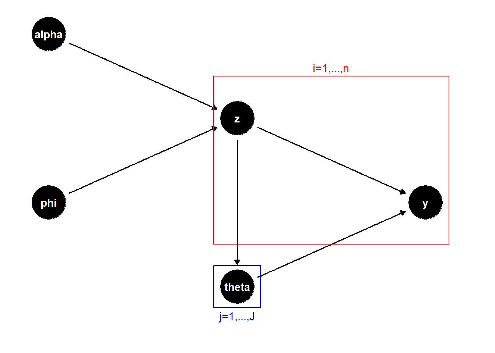

Weekly Reports
July 10, 2025
Summary
This week I built a Quarto website to store my thesis work and weekly reports going forward. I also investigated possible factors for a factorial study of the existing variations of the iMGPE algorithm. Lastly, I began coding an iMGPE algorithm that uses the distance dependent Chinese Restaurant Process.
Prep for Factorial Study
While I was not able to arrange a factorial study of the iMGPE algorithm, I did put some thought into what levels should be included in one. The first part of the algorithm I can vary is how the GP experts are fit, the options being ML optimization, STAN, and my homemade slice sampler. The next is the priors placed on \(\alpha\), \(\phi\), and \(\theta\). A third, discussed by this method’s authors, is to cap the number of points that can be included in a single cluster with the parameter “maxSize”.
I considered a couple of other factors such as the initial cluster assignment and the proposal distributions for the samplers for \(\alpha\), \(\phi\), and the GPs. I decided not to include the first since testing indicated that the initial cluster assignment has no real effect on future clusters. Likewise, I decided against the latter since a good proposal distribution shouldn’t affect the output of the sampler.
I settled on testing two plausible priors for \(\theta\): an InverseGamma\((1,1)\) distribution and a LogNormal\((\mu=0,\sigma^2=1)\) distribution. The lognormal distribution should have heavier tails than the inverse gamma. Both priors were tested with each GP fitting method. Additionally, each GP method was tested with unlimited cluster sizes and with cluster size capped at \(50\).
For the slice sampler version, I completed three runs: one with the default inverse gamma prior on \(\theta\), one with the lognormal prior on \(\theta\), and one with the inverse gamma prior and “maxSize” set to \(50\). The estimated mean functions of each run are plotted below.
For the STAN version, I completed three runs: one with the default inverse gamma prior on \(\theta\), one with the lognormal prior on \(\theta\), and one with “maxSize” set to \(50\). The estimated mean functions of each run are plotted below.

The clearest takeaway was that my jury-rigged slice sampling method to fit a GP expert is not very effective. The slice sampler version displays much more oversmoothing, to the point of seeming to ignore the data entirely. Interestingly, the slice sampler version seems to break entirely when the \(\theta\) prior or the maximum cluster size is changed, while the STAN version handles both just fine.
DDCRP
Based on R code provided by Blei and Frazier, I was able to begin coding a version of the iMGPE algorithm that uses the Distance Dependent Chinese Restaurant Process to cluster the data. This required rewriting the cluster update step, the \(\phi\) sampling step, and the posterior prediction step.
The code is not quite functional yet, but it will be soon.
June 26, 2025
Summary
This week I researched variations of the Chinese Restaurant Process similar to the modified CRP presented by Rasmussen and Ghahramani. The MCRP does not appear to be well documented in literature, but I found a similar algorithm called the distance dependent CRP. These variations appear to be a subset of the field of random measures over data partitions.
I also studied the MCRP prior on a new data set with three distinct clusters, allowing me to examine how well the true cluster structure is captured for varying parameter values. As expected, \(\phi\) controls the degree to which similar points prefer to cluster together, seen in how two measures of cluster quality improve as \(\phi\) decreases.
I continue to test the STAN and slice sampler iMGPE algorithms on strictly positive data sets. The STAN version performs very well, while the slice sampler version struggled.
Distance Dependent CRP
There does not appear to be any research about the specific modified Chinese Restaurant Process used by Rasmussen and Ghahramani. However, the authors Blei and Frazier discuss a similar algorithm in their 2010 paper Distance Dependent Chinese Restaurant Processes. The DD-CRP differs from the regular and modified CRP in that rather than assigning customers to tables (that is, points to clusters) each customer is assigned to sit with another customer or with themselves. The table assignments are derived from these customer assignments by grouping together all customers who can be linked by a sequence of customer pairings into a table.
The conditional probability of customer \(i\) being assigned to sit with customer \(j\) is dependent on the distance between them. Given \(D\), the pairwise distances between all points, and \(\alpha\), the concentration parameter, the probability of customer assignment \(c_i\) is as follows.
\[p(c_i=j|D,\alpha)\propto \begin{cases} f(d_{ij}) \text{ if } j\neq i\\ \alpha \text{ if } i=j \end{cases}\]
Note that this differs from our MCRP (and the regular CRP) in that the assignment of point \(i\) only depends on the distances between customers, and not on the customer or cluster assignments of other points.
The authors demonstrate that the regular CRP can be characterized as a special case of the distance dependent CRP. Furthermore, the regular CRP is the only marginally invariate distance dependent CRP, meaning that marginalizing over a particular customer yields the same probability distribution as if the customer was not included at all. They go on to describe a Gibbs sampling formula for the DD-CRP.
The modified CRP used by Rasmussen and Ghahramani does not appear to have been theoretically explored or justified. While certain properties of the DD-CRP are described, it is not considered in the context of a mixture of experts model. I came across a decent sized array of papers on the more general topic of using random measures to define probability distributions over partitions, of which the CRP, DD-CRP, and probably the MCRP are all examples, but did not have time to synthesize them here.
In summary, I think it may be worthwhile to consider reworking the iMGPE algorithm to use a clustering process that is more clearly defined or easier to work with in terms of theoretical properties. It may be possible to prove, or disprove, qualities such as consistency for the MCRP as well.
Prior Analysis of MCRP
I tested the prior distribution of the Modified Chinese Restaurant Process on a fully segregated data set with three clusters and 100 points in total. I drew \(40\) points from the interval \([0,1]\), \(30\) from \([3,4]\), and \(30\) from \([7,8]\). Since this data set has a true cluster structure, we can evaluate how well the MCRP captures it through metrics such as cluster purity and the Adjusted Rand Index.
Cluster purity is calculated by assigning each cluster to the class most frequent in that cluster and then finding the percent of the total number of data points that were classified correctly given those assignments. It ranges from \(0\) to \(1\) with \(1\) being perfect purity, though this is also affected by the number of points and clusters. The Adjusted Rand Index is a measure of the similarity between the generated partition and the true partition of the data set. It ranges from roughly \(0\) to \(1\), with \(1\) indicating a perfect match to the true cluster structure and \(0\) indicating a fully random cluster assignment.
After correcting a typo in my MCRP code, my initial intuition was borne out. I started with all points assigned to the same cluster and performed \(1000\) MCMC updates according to the MCRP algorithm. I repeated this process with a few different initial states, but they did not have a significant effect on the final state. Considering the results, we see both metrics of cluster accuracy improve as \(\phi\) gets smaller, while the number of clusters varied only with \(\alpha\) staying at about \(5\) clusters for \(\alpha=1\), \(17\) clusters for \(\alpha=3\), and \(34\) clusters for \(\alpha=9\).
Note that cluster purity tends to increase slightly as the number of clusters increases (most visible on the third column) since smaller clusters are more likely to be pure even when generated randomly.
Monte Carlo Methods on New Data
This week I tested the STAN and slice sampler versions of the iMGPE on strictly positive data sets. The slice sampler version was tested on the data set from last week, where \(f(x)=1+0.3x+\frac{\sin(\pi x)}{5x}\). The STAN version was tested on a similar data set where \(f(x)=1+0.5x+\frac{\sin(\pi x)}{2x}\). The posterior estimate of the function is plotted below for each, with STAN on the left and the slice sampler on the right.
The blue line is the true function path and the red line is the median of the fitted values. The upper grey band shows the \(95\%\) credible band over the test set while the lower grey band is a visual aid displaying the width of the credible band with its lower bound fixed at a level below the graph. The mean MC standard error for the \(2.5th\), \(50th\) and \(97.5th\) quantiles is \(0.03\), \(0.02\), and \(0.01\) for the STAN version and \(0.04\), \(0.02\) and \(0.01\) for the slice sampler version.
Unexpectedly, the slice sampler displays high uncertainty towards the right half of the plot and severely underestimates not just the true function path but the observed data as well. I suspect the algorithm’s estimating function, which takes a weighted mean of every cluster’s estimate of a new data point, is still putting too much weight on the estimates of distant clusters. I am not sure why it would perform so much worse than the STAN version though.
June 19, 2025
Summary
This week I investigated the Modified Chinese Restaurant Process and attempted to reason out the role of the parameter \(\phi\) with some success. I also studied the new versions of iMGPE with STAN and slice sampling based GP experts and analyzed the Monte Carlo standard error of their quantile estimates.
I also tested the iMGPE algorithm on a new simulated data set with a strictly positive response. The predictive posterior distribution appears to be over-smoothed; it estimates the function as closer to a straight line than it really is.
MCRP Prior
This week, I continued to study the Modified Chinese Restaurant Process used in the iMGPE algorithm with particular attention to the role played by the parameter \(\phi\). Previous experiments had indicated that \(\phi\) had little influence on the average number of clusters and new experiments over a broader range of \(\phi\) values simply bore this out.
Upon reflection, I realized that \(\phi\) shouldn’t have a major impact on the number of clusters anyways. The number of clusters would be controlled primarily by the probability of assigning a point to a new cluster, which is \(\alpha/(n+\alpha)\); that is, it depends only on \(\alpha\) and the number of data points. Experimentation with the MCRP conditional assignment probabilities seemed to indicate that \(\phi\) controls how strongly a point prefers to join a cluster that is close to it in \(X\). As \(\phi\) approaches infinity, the probability of a point joining a specific cluster approaches proportionality with the number of points in that cluster. As \(\phi\) approaches zero, the probability of a point joining a specific cluster approaches one if that cluster is the closest to the point and zero otherwise.
Therefore, we should not expect \(\phi\) to influence the number of clusters generated but rather how points are distributed among the clusters, with smaller \(\phi\) values tending towards more separation between clusters. Unfortunately, I struggled to verify this empirically, as it is difficult to express separation between clusters in a compact form. I found one single number summary, the Dunn Index, but when tested on a range of values of \(\alpha\) and \(\phi\) (\((0.1,1,10)\) and \((1,10,100)\) respectively) it did not vary significantly.
A clearer pattern was visible when considering the spread of cluster sizes, that is, the difference between the largest cluster size and the smallest. As \(\phi\) increases, the spread shrinks slightly. Admittedly, I am not certain why this would be the case. Further investigation is warranted.
Another plausible use of the \(\phi\) parameter would be if we had multiple input variables. Then \(\phi\) could determine the importance of a given \(X\) input for clustering.
Updated Experimental Results
I tested the STAN version of the iMGPE algorithm with \(2000\) iterations per expert instead of \(500\). For now, I am still limited to \(500\) MCMC iterations in total due to memory restraints. The results did not appear to be significantly different.
The predicted posterior of the STAN version is plotted below on the left. The blue line is the true function path and the red line is the median of the fitted values. The upper grey band shows the \(95\%\) credible band over the test set while the lower grey band is a visual aid displaying the width of the credible band with its lower bound fixed at \(-2\).
On the right is a plot of the \(95\%\) credible intervals for the median and \(95\%\) credible interval bounds of the estimated function given the Monte Carlo standard error. The blue line is the true function path. The solid red line is the median of the fitted vales and the two dashed red lines are the \(2.5th\) and \(97.5th\) quantiles of the fitted values. The grey ribbons are the MCSE credible intervals.
The average MC standard error for the median was \(0.012\) and for the \(2.5th\) and \(97.5th\) quantiles it was \(0.019\) and \(0.022\) respectively.
For comparison, here are the same plots for the slice sampling version. On the left is the predicted posterior with the true and median fitted functions plotted in blue and red and the \(95\%\) credible band as the grey band. On the right is the plot of the \(95\%\) credible bands for the \(2.5th\), \(50th\), and \(97.5th\) percentiles given the Monte Carlo standard error of their estimates.


The average MC standard error for the median was \(0.015\) and for the \(2.5th\) and \(97.5th\) quantiles it was \(0.022\) and \(0.027\) respectively.
New Simulated Data Set
Our previous experiments on both the motorcycle data and the simulated data set displayed an unexpected shrinkage effect on the fitted function line, which we theorized to be towards the grand mean or perhaps \(y=0\). To distinguish between these possibilities, I fit a new instance to a new data set with a strictly positive response. A new data set of \(100\) points was generated by the following function.
\[f(x)=1+0.3x+\frac{\sin(\pi x)}{5x}\]
I tried fitting this data set with the optimization method and obtained the plot of the fitted function below. The fitted line undershoots the true line (in blue) in some places but overshoots in others. Overall, it seems to under-fit the function line, preferring a straighter path than what the function actually follows.
June 12, 2025
Summary
This week I refined my data model description and DAG chart. I also evaluated the prior distribution of the number of clusters generated by the modified Chinese Restaurant Process used in iMGPE, finding that it is often much higher than the observed number of clusters.
I developed two new versions of the iMGPE algorithm that replaced the optimization-based GP evaluation step with two sampling-based methods: STAN and slice sampling. These methods take much longer to run than the optimization version but produce estimates of similar quality.
Data Model
We have an \(n\times 1\) continuous response vector \(y\) and an \(n\times d\) data matrix \(X\). The estimated value of a data point \(y_i\) under the iMGPE model is the sum of the fitted estimates for that data point from all possible GP experts fit to subsets of the data containing \(y_i\) and weighted by a Dirichlet process. Let \(z\) represent a possible vector of cluster assignments and let \(z^{(k)}\) be the \(k^{th}\) element of some ordered list of all possible \(z\). Then \(j=1,\dots,J_k\) index the clusters within \(z^{(k)}\). Let \(C_j^{(k)}\) be the number of observations in cluster \(j\) given assignment \(z^{(k)}\). Then we have as follows.
\[y\sim \sum_{k=1}^{p(n)} \left[\prod_{j=1}^{J_k} N_{C_j^{(k)}}(0,\Sigma_{\theta_j}) \right] w_k\] \[w_k=P(z=z^{(k)}|\alpha,\phi)\] where the \(w_z\) are the marginal probabilities of a modified Chinese Restaurant Process that generates cluster assignments \(z\) and \(p(n)\) is the partition function. The CRP used here has been modified to depend on the input data \(X\). It is controlled by two parameters, \(\alpha\) and \(\phi\), the first being the usual concentration parameter and the second controlling the cluster occupancy estimates. A more in-depth explanation of this CRP is provided in the iMGPE Algorithm section from last week. It should also be noted that there is no known closed form for \(w_k\). The closest I could find was the multivariate Ewen’s distribution, which describes the distribution on the set of \(p(n)\) that arises from a regular Chinese Restaurant Process. However, it only accounts for the number of clusters of different sizes, and does not serve as a marginal distribution of \(z\).
The full joint distribution, including the priors for all parameters, is as follows. Here, \(\Phi\) is the pdf of a normal distribution.
\[p(y,\theta,\phi,\alpha)=\left[ \sum_{k=1}^{p(n)} \left[\prod_{j=1}^{J_k} \Phi_{C_j^{(k)}}(0,\Sigma_{\theta_j}) \right] p(z(k)|\alpha,\phi)\right] p(\theta)p(\phi)p(\alpha)\]
Alternatively, the model can be expressed in hierarchical terms where \(J_z\) is the number of clusters in \(z\) and \(C_{j,z}\) is the number of observations in the \(j^{th}\) cluster in \(z\).
\[y|z\sim \prod_{j=1}^{J_z} N_{C_{j,z}}(0,\Sigma_{\theta_{j}})\] \[z|\alpha,\phi \sim MCRP(\alpha,\phi)\]
Here, \(N_{C_j^{(z)}}(0,\Sigma_{\theta_j})\) is the \(C_j^{(z)}\)-dimensional multivariate normal distribution with covariance matrix \(\Sigma_{\theta_j}\) defined by a Gaussian kernel function with parameters \(\theta_j\).
Then \(\theta_j\) is the parameter vector for the GP expert assigned to cluster \(j\), while \(\alpha\) is the CRP concentration parameter and \(\phi\) is the parameter vector for the CRP’s occupation number estimate. Note that \(\phi\) is purely a vector of lengthscales for a Gaussian kernel. The priors on \(\theta\), \(\alpha\), and \(\phi\) are described below.
\[\theta_{j,k}\stackrel{ind}{\sim} Gamma(a_k,b_k) \text{ for } k=1,\dots,d\] \[\alpha\sim Inv.Gam(1,1),\text{ } \phi_k\stackrel{iid}{\sim} LogN(0,1) \text{ for } k=1,\dots,d\] That is, each element \(k\) of \(\theta_j\) (the dimension of \(X\) plus a noise parameter) is assigned a independent Gamma prior with fixed parameters \(a_k\) and \(b_k\). Thus, every GP expert has the same prior on its noise parameter and so on. Similarly, each element of \(\phi\) receives an independent log-normal prior.
A third visualization of the model structure is a directed acyclic graph, shown below. Starting with the priors for \(\alpha\), \(\phi\), and \(\theta\), we can draw their values and generate our latent variables \(z\) and our true variables \(y\). Note that \(\theta\) depends on \(z\) as well as its prior, as \(z\) defines the number of clusters and thus the number of GP parameters to be drawn. The red and blue boxes indicate the quantities which are drawn multiple times for each of the \(n\) data points or each of the \(J\) clusters.

Prior of MCRP
The modified Chinese Restaurant process is dependent on the input data \(X\) through the parameter \(\phi\) in addition to the parameter \(\alpha\) used by a regular CRP. It is worth considering how this affects the prior distribution of our cluster assignment vector \(z\). While there is no closed form for the marginal distribution of \(z\), we can study it empirically by generating samples of \(z\) using the algorithm described in the iMGPE Algorithm section last week.
Using the simulated dataset, described in the April 24 section, I studied the average number of clusters generated by the MCRP. I chose the values \(\alpha=1,3,5\) and \(\phi=2.5,5,7.5\) to cover the most common range of values observed in our data and generated a set of \(1000\) \(z\) vectors for each combination of \(\alpha\) and \(\phi\). The mean and standard deviation of the number of clusters in those sets are shown below.
| \(\alpha\) | \(\phi\) | mean | sd |
|---|---|---|---|
| 1 | 2.5 | 4.42 | 1.86 |
| 1 | 5 | 4.86 | 1.84 |
| 1 | 7.5 | 5.04 | 1.99 |
| 3 | 2.5 | 17.6 | 3.26 |
| 3 | 5 | 17.8 | 3.55 |
| 3 | 7.5 | 17.9 | 3.27 |
| 5 | 2.5 | 27.1 | 3.66 |
| 5 | 5 | 27.1 | 3.87 |
| 5 | 7.5 | 26.8 | 3.75 |
These results can be compared to the expected numbers of clusters from a standard CRP with the same \(\alpha\) value, which is \(\alpha(\psi(n+\alpha)-\psi(\alpha))\) where \(n\) is the number of data points and \(\psi\) is the digamma function. For \(\alpha\) values of \(1\), \(3\), and \(5\), the expected numbers of clusters are \(5.2\), \(11.1\), and \(15.7\). We can see that the data dependency in the MCRP has increased the expected number of clusters and the inflation gets bigger as \(\alpha\) increases. However, \(\phi\) does not appear to have a strong influence on the number of clusters, at least within the range I examined.
iMGPE with STAN & Slice Sampling
I coded two new versions of the iMGPE algorithm: one that fit GP experts using Hybrid Monte Carlo using STAN and one that fit GP experts by sampling their parameters with elliptical slice sampling. The STAN experts ran for \(500\) iterations each while the slice sampler drew \(100\) sample parameter values from the GP posterior and averaged them. Both took much longer to run than the optimization version and had to be run for fewer iterations. Particularly, running the STAN version for more than \(600\) or so iterations caused a “Maximum number of DLLs reached” error that I haven’t yet determined how to fix. Thus, I am presenting a \(500\) iteration run of the STAN version and a \(1000\) iteration run of the slice sampling version.
Both methods were trained on the simulated data set and compared on a test set of \(500\) evenly spaced points between \(0\) and \(5\). The predicted posterior of the STAN version is plotted below. The blue line is the true function path and the red line is the median of the fitted values (the mean proved to be much less coherent). The upper grey band shows the \(95\%\) credible band over the test set while the lower grey band is a visual aid displaying the width of the credible band with its lower bound fixed at \(-2\).
The predictive posterior of the slice sampling version is plotted here. Unlike the STAN version, the red line here does portray the mean rather than the median.
The STAN and slice sampling versions are a bit less accurate than the optimization version in terms of their estimated function. That is, the red line strays further from the blue line in these versions. The STAN version, however, has equal or less uncertainty in its estimate than the optimization version, while the slice sampling version has more.
May 29, 2025
Summary
Since our last meeting, I have improved the data model and algorithm descriptions and added a directed acyclic graph to portray the relationships between the model components. I also investigated the cause of high uncertainty in the estimated function occurring in areas with many data points. This does not seem to be caused by interplay between the estimated nugget and the function, as the nugget estimates are both small and highly consistent across the test data. More likely, it is an artifact of the clustering process, where points are occasionally put in the ‘wrong’ cluster or a cluster is stacked with disparate points, whose GP subsequently has greater uncertainty in its estimates.
I also coded a functioning iMGPE algorithm that fits GP experts with an MCMC process via STAN. I have not yet completed a full run of the new model as it is much slower than the original.
Data Model Description
We have an \(n\times 1\) continuous response vector \(y\) and an \(n\times d\) data matrix \(X\). The estimated value of a data point \(y_i\) under the iMGPE model is the sum of the fitted estimates for that data point from all possible GP experts fit to subsets of the data containing \(y_i\) and weighted by a Dirichlet process. Let \(z\) represent a possible vector of cluster assignments and let \(z^{(k)}\) be the \(k^{th}\) element of some ordered list of all possible \(z\). Then \(j=1,\dots,J_k\) index the clusters within \(z^{(k)}\). Let \(C_j^{(k)}\) be the number of observations in cluster \(j\) given assignment \(z^{(k)}\). Then we have as follows.
\[y\sim \sum_{k=1}^{p(n)} \left[\prod_{j=1}^{J_k} N_{C_j^{(k)}}(0,\Sigma_{\theta_j}) \right] w_k\] \[w_k=P(z=z^{(k)}|\alpha,\phi)\] where the \(w_z\) are the marginal probabilities of a modified Chinese Restaurant Process that generates cluster assignments \(z\) and \(p(n)\) is the partition function. The CRP used here has been modified to depend on two parameters, \(\alpha\) and \(\phi\), the first being the usual concentration parameter and the second controlling the cluster occupancy estimates. A more in-depth explanation of this CRP is provided in the next section. It should also be noted that there is no known closed form for \(w_k\). The closest I could find was the multivariate Ewen’s distribution, which describes the distribution on the set of \(p(n)\) that arises from a regular Chinese Restaurant Process. However, it only accounts for the number of clusters of different sizes, and does not serve as a marginal distribution of \(z\).
The full joint distribution, including the priors for all parameters, is as follows. Here, \(\Phi\) is the pdf of a normal distribution.
\[p(y)=\left[ \sum_{k=1}^{p(n)} \left[\prod_{j=1}^{J_k} \Phi_{C_j^{(k)}}(0,\Sigma_{\theta_j}) \right] P(z(k)|\alpha,\phi)\right] p(\theta)p(\phi)p(\alpha)\]
Alternatively, the model can be expressed in hierarchical terms where \(J_z\) is the number of clusters in \(z\) and \(C_{j,z}\) is the number of observations in the \(j^{th}\) cluster in \(z\).
\[y|z\sim \prod_{j=1}^{J_z} N_{C_{j,z}}(0,\Sigma_{\theta_{j}})\] \[z|\alpha,\phi \sim MCRP(\alpha,\phi)\]
Here, \(N_{C_j^{(z)}}(0,\Sigma_{\theta_j})\) is the \(C_j^{(z)}\)-dimensional multivariate normal distribution with covariance matrix \(\Sigma_{\theta_j}\) defined by a Gaussian kernel function with parameters \(\theta_j\).
Then \(\theta_j\) is the parameter vector for the GP expert assigned to cluster \(j\), while \(\alpha\) is the CRP concentration parameter and \(\phi\) is the parameter vector for the CRP’s occupation number estimate. Note that \(\phi\) is purely a vector of lengthscales for a Gaussian kernel. The priors on \(\theta\), \(\alpha\), and \(\phi\) are described below.
\[\theta_{j,k}\stackrel{ind}{\sim} Gamma(a_k,b_k) \text{ for } k=1,\dots,d\] \[\alpha\sim Inv.Gam(1,1),\text{ } \phi_k\stackrel{iid}{\sim} LogN(0,1) \text{ for } k=1,\dots,d\] That is, each element \(k\) of \(\theta_j\) (the dimension of \(X\) plus a noise parameter) is assigned a independent Gamma prior with fixed parameters \(a_k\) and \(b_k\). Thus, every GP expert has the same prior on its noise parameter and so on. Similarly, each element of \(\phi\) receives an independent log-normal prior.
A third visualization of the model structure is a directed acyclic graph, shown below. Starting with the priors for \(\alpha\), \(\phi\), and \(\theta\), we can draw their values and generate our latent variables \(z\) and our true variables \(y\). Note that \(\theta\) depends on \(z\) as well as its prior, as \(z\) defines the number of clusters and thus the number of GP parameters to be drawn.
The iMGPE Algorithm
The modified CRP used in this algorithm is defined by “R. M. Neal” (Algorithm 8 in that paper with \(m=1\)) and works as follows:
We represent the current cluster state with assignment labels \(z=(z_1,\dots,z_n)\) and GP parameter vectors \(\theta_1,\dots,\theta_J\) where \(J\) is the number of clusters in the current state. For \(i=1,\dots,n\), repeat the following. Let \(J^{-i}\) be the number of clusters in \(z\) with point \(i\) removed. Let \(\theta_{J^{-i}+1}\) be a parameter vector drawn from its prior distribution, in this case \(Gamma^d(a,b)\). Draw a new value for \(z_i\) with the following conditional probabilities:
\[P(z_i=j|z_{-i},y_i,\dots)\propto \begin{cases} \frac{n-1}{n+\alpha-1}\frac{\sum_{i'\neq i,z_{i'}=j} K_{\phi}(X_i,X_{i'})}{\sum_{i'\neq i} K_{\phi}(X_i,X_{i'})} f(y_i|\theta_j) \text{ for } j=1,\dots,J^{-i}\\ \frac{\alpha}{n+\alpha-1}f(y_i|\theta_{J^{-i}+1}) \text{ for } j=J^{-i}+1 \end{cases}\]
where \(f(y_i|\theta_j)\) is the normal density of \(y_i\) given the kriging equations with parameter vector \(\theta_j\) defining the kernel function.
I have implemented the Infinite Mixture of Gaussian Process Experts algorithm mostly as described by the authors Rasmussen and Ghahramani, though with a few alterations of my own which are noted below. First, I initialize indicator variables \(z\) to a set of values. I generally start by assigning all points to a single cluster. I set gamma prior distributions on the lengthscale and nugget parameters of the GP experts, using the ‘darg’ and ‘garg’ functions of the package ‘laGP’ and set initial values for \(\alpha\) and \(\phi\). This approach then iterates through the following MCMC algorithm.
- Perform a Gibbs sampling sweep over the cluster assignment indicators, using the modified Chinese Restaurant Process described in the model explanation, to generate a new cluster assignment vector \(z\).
- Fit a Gaussian process expert to each cluster in \(z\) and get ML estimates of each expert’s parameters \(\theta_j\). Note that this is not a sampling step but maximization.
- Sample the Dirichlet process concentration parameter, \(\alpha\), using quantile slice sampling with a \(Gamma(1,1)\) proposal distribution. The posterior distribution of \(\alpha\) we sample from is \[p(\alpha|n, J)\propto \alpha^{J-3/2}\exp(-1/2\alpha)\Gamma(\alpha)/\Gamma(n+\alpha)\]
- Sample the other CRP parameter \(\phi\) via random walk Monte Carlo. The random walk step uses a normal proposal distribution centered at the current value and with variance equal to \((2.38^2/d)H^{-1}\), \(d\) being the number of inputs and \(H\) the Hessian matrix of the distribution of \(\phi\). The posterior distribution of \(\phi\) we are sampling from is \[p(\phi|z,\alpha,\dots)\propto p(z|y,\phi,\alpha)p(\phi)\approx \left[\prod_{i=1}^n p(z_i|y,\phi,\alpha) \right] p(\phi)\]
- Repeat from step 1 until the MCMC output has converged.
Analysis of Current Results
In the current algorithm, we see variation in the uncertainty of the fitted mean on the test data that is hard to explain given our data, with patches of relatively high uncertainty in areas with many data points (such as around \(x=3\)). This does not seem to be due to variation in the nugget parameter estimates, as a plot of the average and \(95\%\) credible band for the estimated nugget for each observation is strongly uniform and centered around the relatively small value of \(0.01\). On a positive note, this is quite close to the true constant nugget value of \(0.02\).
As before, we drew an estimated value for each point on the test set every fifth iteration, using the formula \(\hat\mu_i = \sum_{j=1}^J p(z_i=j|\alpha,\phi)\mu_{i,j}\) where \(\hat\mu_i\) is the estimate for observation \(i\) in the test set, \(\mu_{i,j}\) is the fitted value of point \(i\) under the GP for cluster \(j\), and \(p(z_i=j|\alpha,\phi)\) is the conditional probability of point \(i\) being assigned to cluster \(j\) under our modified CRP.
The resultant credible band for the simulated function is graphed below, based on \(1000\) draws from the predictive posterior. The blue line is the true function path and the red line is the mean of the fitted values. The upper grey band shows the \(95\%\) credible band over the test set while the lower grey band is a visual aid displaying the width of the credible band with its lower bound fixed at \(-2\).
I also recorded the nugget parameter estimates for each point in each iteration. I had hoped that this could explain some of the variation we see in fitted function uncertainty. The solid line and the grey band represent the mean of the nugget and the \(95\%\) credible band on the nugget across all values in the test set respectively.
The nugget likely has little effect on fitted function uncertainty as it is both small and uniform. A more likely candidate is unlucky cluster assignments creating clusters that cannot be fit with a high degree of certainty. For example, the plot below displays our data set colored by the cluster assignments of the 200th iteration. Note that the eighth cluster, the purple dots, contains several points in the upper left of the plot and one in the dip around \(x=3\) and another in the peak around \(x=4\). These points likely cannot be estimated with confidence given the other points in the cluster and their estimates could be significantly inaccurate and distort the tails of the overall function estimate.
Single GP Comparison
For comparison, I fit a single Gaussian process model to the same data set and plotted its predictive mean and uncertainty on the test data. I found that a single GP model arguably does a better job of matching the estimated function (in red) to the true function (in blue). However, its uncertainty in that estimate is much wider than in the iMGPE model almost everywhere. As before, the red and blue lines represent the estimated and true functions, the grey band around them represents the \(95\%\) credible interval in the estimated function, and the grey band at the bottom displays the width of the credible band across \(X\).
May 15, 2025
Summary
This week I refined my explanation of the data model to be more coherent and readable. I then wrote out the full update step for the MCMC algorithm, detailing how each component of the model is updated.
Lastly, I developed a method to estimate values on a test set to replace my old practice of fitting a credible interval around each data point. The new method produces a much smoother and narrower credible band for the estimated function on both the simulated data set and the motorcycle data set.
Explanation of Data Model
We have an \(n\times 1\) continuous response vector \(y\) and an \(n\times d\) data matrix \(X\). The estimated value of a data point \(y_i\) under the iMGPE model is the sum of the fitted estimates for that data point from all possible GP experts fit to subsets of the data containing \(y_i\) and weighted by a Dirichlet process. Let \(z\) represent a possible vector of cluster assignments and let \(z^{(k)}\) be the \(k^{th}\) element of some ordered list of all possible \(z\). Then \(j=1,\dots,J_k\) index the clusters within \(z^{(k)}\). Let \(C_j^{(k)}\) be the number of observations in cluster \(j\) given assignment \(z^{(k)}\). Then we have as follows.
\[y\sim \sum_{k=1}^{p(n)} \left[\prod_{j=1}^{J_k} N_{C_j^{(k)}}(0,\Sigma_{\theta_j}) \right] w_k\] \[w_k=P(z=z^{(k)}|\alpha,\phi,\dots)\] where the \(w_z\) are the marginal probabilities of a Chinese Restaurant Process that generates cluster assignments \(z\) and \(p(n)\) is the partition function. The CRP used here has been modified to depend on two parameters, \(\alpha\) and \(\phi\), the first being the usual concentration parameter and the second controlling the cluster occupancy estimates. A more in-depth explanation of this CRP will be provided shortly.
Alternatively, the model can be expressed in hierarchical terms where \(J_z\) is the number of clusters in \(z\) and \(C_{j,z}\) is the number of observations in the \(j^{th}\) cluster in \(z\).
\[y|z\sim \prod_{j=1}^{J_z} N_{C_{j,z}}(0,\Sigma_{\theta_{j}})\] \[z|\alpha,\phi \sim CRP(\alpha,\phi)\]
Here, \(N_{C_j^{(z)}}(0,\Sigma_{\theta_j})\) is the \(C_j^{(z)}\)-dimensional multivariate normal distribution with covariance matrix \(\Sigma_{\theta_j}\) defined by a Gaussian kernel function with parameters \(\theta_j\). Similarly, \(Gamma^d(a,b)\) is the joint prior over the GP parameters and is the product of \(d\) Gamma distributions.
Then \(\theta_j\) is the parameter vector for the GP expert assigned to cluster \(j\), while \(\alpha\) is the CRP concentration parameter and \(\phi\) is the parameter vector for the CRP’s occupation number estimate. Note that \(\phi\) is purely a vector of lengthscales for a Gaussian kernel. The priors on \(\theta\), \(\alpha\), and \(\phi\) are described below.
\[\theta_{j,k}\stackrel{ind}{\sim} Gamma(a_k,b_k) \text{ for } k=1,\dots,d\] \[\alpha\sim Inv.Gam(1,1),\text{ } \phi_k\stackrel{iid}{\sim} LogN(0,1) \text{ for } k=1,\dots,d\] That is, each element \(k\) of \(\theta_j\) (the dimension of \(X\) plus a noise parameter) is assigned a independent Gamma prior with fixed parameters \(a_k\) and \(b_k\). Thus, every GP expert has the same prior on its noise parameter and so on. Similarly, each element of \(\phi\) receives an independent log-normal prior.
The modified CRP used in this algorithm is defined by “R. M. Neal” (Algorithm 8 in that paper with \(m=1\)) and works as follows:
We represent the current cluster state with assignment labels \(z=(z_1,\dots,z_n)\) and GP parameter vectors \(\theta_1,\dots,\theta_J\) where \(J\) is the number of clusters in the current state. For \(i=1,\dots,n\), repeat the following. Let \(J^{-i}\) be the number of clusters in \(z\) with point \(i\) removed. Let \(\theta_{J^{-i}+1}\) be a parameter vector drawn from its prior distribution, in this case \(Gamma^d(a,b)\). Draw a new value for \(z_i\) with the following conditional probabilities:
\[P(z_i=j|z_{-i},y_i,\dots)\propto \begin{cases} \frac{n-1}{n+\alpha-1}\frac{\sum_{i'\neq i,z_{i'}=j} K_{\phi}(X_i,X_{i'})}{\sum_{i'\neq i} K_{\phi}(X_i,X_{i'})} f(y_i|\theta_j) \text{ for } j=1,\dots,J^{-i}\\ \frac{\alpha}{n+\alpha-1}f(y_i|\theta_{J^{-i}+1}) \text{ for } j=J^{-i}+1 \end{cases}\]
where \(f(y_i|\theta_j)\) is the normal density of \(y_i\) given the kriging equations with parameter vector \(\theta_j\) defining the kernel function.
The iMGPE Algorithm
I have implemented the Infinite Mixture of Gaussian Process Experts algorithm mostly as described by the authors Rasmussen and Ghahramani, though with a few alterations of my own which are noted below. This approach then iterates through the following MCMC algorithm.
- Initialize indicator variables \(z\) to a set of values. I generally start by assigning all points to a single cluster. Set gamma prior distributions on the lengthscale and nugget parameters of the GP experts, using the ‘darg’ and ‘garg’ functions of the package ‘laGP’. Set initial values for \(\alpha\) and \(\phi\).
- Perform a Gibbs sampling sweep over the cluster assignment indicators, using the Chinese Restaurant Process described in the model explanation, to generate a new cluster assignment vector \(z\).
- Fit a Gaussian process expert to each cluster in \(z\) and get ML estimates of each expert’s parameters \(\theta_j\).
- Use these GP experts to generate estimates on the test set. More detail on this step is included in the next section.
- Sample the Dirichlet process concentration parameter, \(\alpha\), using quantile slice sampling with a \(Gamma(1,1)\) proposal distribution. The posterior distribution of \(\alpha\) we sample from is \[p(\alpha|n, J)\propto \alpha^{J-3/2}\exp(-1/2\alpha)\Gamma(\alpha)/\Gamma(n+\alpha)\]
- Sample the other CRP parameter \(\phi\) via random walk Monte Carlo. The random walk step uses a normal proposal distribution centered at the current value and with variance equal to \((2.38^2/d)H^{-1}\), \(d\) being the number of inputs and \(H\) the Hessian matrix of the distribution of \(\phi\). The posterior distribution of \(\phi\) we are sampling from is \[p(\phi|z,\alpha,\dots)\propto p(z|y,\phi,\alpha)p(\phi)\approx \left[\prod_{i=1}^n p(z_i|y,\phi,\alpha) \right] p(\phi)\]
- Repeat from step 2 until the MCMC output has converged.
Experiments on Simulated Data
I set up a new method of sampling posterior predictive values on a test set and applied it to the simulated data set, using a test set of \(500\) evenly spaced points between \(0\) and \(5\). Every fifth iteration, I would estimate fitted values on the test set for each GP expert currently in use. Then, for each point in the test set, I would calculate the conditional probabilities of it belonging to each of the current clusters. Lastly, I found the sum of the GP estimates for each point weighted by the probabilities of their respective clusters and record the resulting set of values for that iteration.
The resultant credible band for the simulated function is graphed below, based on \(1000\) draws from the predictive posterior. The blue line is the true function path and the red line is the mean of the fitted values. The upper grey band shows the \(95\%\) credible band over the test set while the lower grey band is a visual aid displaying the width of the credible band with its lower bound fixed at \(-2\). Uncertainty is greatest at the edges of the training data and around the rightmost peak, where there are few points. This is as we would expect.
Experiments on Motorcycle Data
I tested this posterior prediction method on the motorcycle data set, using a test set of \(561\) evenly spaced points between \(2\) and \(58\). I have made some changes to the body of the algorithm since I last tested on the motorcycle data, so the trace plots for \(\phi\) and \(\alpha\) are also included. Both parameters have converged, and the algorithm heavily favors dividing the training data into two clusters.
I obtained \(1000\) draws from the predictive posterior distribution as described in the previous section and have plotted their mean and \(95\%\) credible band below. As before, the grey band at the bottom of the graph is a visual aid displaying the width of the credible interval across time.
May 8, 2025
Summary
This week I updated my marginal model notation to be more readable and included a brief description of the hierarchical model. I also found and fixed the bug in my code that was causing unusually wide credible intervals.
I am working on converting the algorithm fully to Rcpp and implementing support for multivariate and categorical \(X\) inputs. Now that the code structure of the algorithm has been developed, this should proceed quickly.
Explanation of Data Model
We have an \(n\times 1\) continuous response vector \(y\) and an \(n\times d\) data matrix \(X\). The estimated value of a data point \(y_i\) under the iMGPE model is the sum of the fitted estimates for that data point from all possible GP experts fit to subsets of the data containing \(y_i\) and weighted by a Dirichlet process. Let \(z\) represent a possible vector of cluster assignments and let \(z^{(k)}\) be the \(k^{th}\) element of some ordered list of all possible \(z\). Then \(j=1,\dots,J_k\) index the clusters within \(z^{(k)}\). Let \(C_j^{(k)}\) be the number of observations in cluster \(j\) given assignment \(z(k)\). Then we have as follows.
\[y\sim \sum_{k=1}^{p(n)} \left[\prod_{j=1}^{J_k} N_{C_j^{(k)}}(0,\Sigma_{\theta_j}) \right] w_k\] \[w_k=P(z=z^{(k)}|\alpha,\phi,\dots)\] where the \(w_z\) are the marginal probabilities of a Chinese Restaurant Process that generates cluster assignments \(z\) and \(p(n)\) is the partition function. Alternatively, the model can be expressed in hierarchical terms as
\[y|z\sim \prod_{j=1}^J N_{C_j}(0,\Sigma_{\theta_j})\] \[z|\alpha,\dots \sim CRP(\alpha,\phi)\]
The specific CRP is defined by “R. M. Neal” (Algorithm 8 in that paper with \(m=1\)) and works as follows:
We represent the current cluster state with assignment labels \(z=(z_1,\dots,z_n)\) and GP parameter vectors \(\theta_1,\dots,\theta_J\) where \(J\) is the number of clusters in the current state. For \(i=1,\dots,n\), repeat the following. Let \(J^{-i}\) be the number of clusters in \(z\) with point \(i\) removed. Let \(\theta_{J^{-i}+1}\) be a parameter vector drawn from its prior distribution, in this case \(Gamma^d(a,b)\). Draw a new value for \(z_i\) with the following conditional probabilities:
\[P(z_i=j|z_{-i},y_i,\dots)\propto \begin{cases} \frac{n-1}{n+\alpha-1}\frac{\sum_{i'\neq i,z_{i'}=j} K_{\phi}(X_i,X_{i'})}{\sum_{i'\neq i} K_{\phi}(X_i,X_{i'})} f(y_i|\theta_j) \text{ for } j=1,\dots,J^{-i}\\ \frac{\alpha}{n+\alpha-1}f(y_i|\theta_{J^{-i}+1}) \text{ for } j=J^{-i}+1 \end{cases}\]
where \(f(y_i|\theta_j)\) is the normal density of \(y_i\) given the kriging equations with parameter vector \(\theta_j\) defining the kernel function. The kriging equations are explained in the posterior predictive distribution section.
Meanwhile, \(N_{C_j^{(z)}}(0,\Sigma_{\theta_j})\) is the \(C_j^{(z)}\)-dimensional multivariate normal distribution with covariance matrix \(\Sigma_{\theta_j}\) defined by a Gaussian kernel function with parameters \(\theta_j\). Similarly, \(Gamma^d(a,b)\) is the joint prior over the GP parameters and is the product of \(d\) Gamma distributions.
Above, \(\theta_j\) is the parameter vector for the GP expert assigned to cluster \(j\), while \(\alpha\) is the DP concentration parameter and \(\phi\) is the parameter vector for the DP’s occupation number estimate. Note that \(\phi\) is purely a vector of lengthscales for a Gaussian kernel. The priors on \(\theta\), \(\alpha\), and \(\phi\) are described below.
\[\theta_{j,k}\stackrel{ind}{\sim} Gamma(a_k,b_k) \text{ for } k=1,\dots,d\] \[\alpha\sim Inv.Gam(1,1),\text{ } \phi_k\stackrel{iid}{\sim} LogN(0,1) \text{ for } k=1,\dots,d\] That is, each element \(k\) of \(\theta_j\) (the dimension of \(X\) plus a noise parameter) is assigned a independent Gamma prior with fixed parameters \(a_k\) and \(b_k\). Thus, every GP expert has the same prior on its noise parameter and so on. Similarly, each element of \(\phi\) receives an independent log-normal prior.
Credible interval investigation
Up to now, the posterior distributions of the fitted values have been highly skewed by outliers, leading to unusually large credible intervals. After investigation, I determined that this was due to an error in the posterior sampling code.
Every so often, the algorithm will generate a cluster with only one data point in it and attempt to fit a GP to that cluster. I learned early on to wrap the model code in a try-catch loop in case the GP function failed. My sampler from the \(y\) posterior assumed that any cluster of size 1 could not fit a GP, but this was not always true! In those cases, the sampler used the wrong GP, resulting in inaccurate estimates that defaulted towards the GP mean of zero.
After correcting this, I tested my code on the simulated dataset and found that the credible band was dramatically narrower.
For every fifth iteration, I took the fitted values of the response at each point in time, resulting in a sample of 1000 fitted values for each point. I took the 2.5th and 97.5th quantiles of this sample to get a credible interval for the fitted value at each point. Below, I have plotted the true data as black dots, the mean fitted values as a red line, and the \(95\%\) credible intervals as the gray ribbon.

May 1, 2025
Summary
This week I updated my explanation of the data model and added a description of the posterior predictive distribution. I also revised my choice of standard deviation for the proposal distribution of \(\phi\)’s random walk sampler, bringing its acceptance rate back up to acceptable levels.
Marginal Data Model
We have an \(n\times 1\) continuous response vector \(y\) and an \(n\times d\) data matrix \(X\). The estimated value of a data point \(y_i\) under the iMGPE model is the sum of the fitted estimates for that data point from all possible GP experts fit to subsets of the data containing \(y_i\) and weighted by a Dirichlet process. Let \(z\) represent a possible vector of cluster assignments and let \(z(k)\) be the \(k^{th}\) element of some ordered list of all possible \(z\). Then \(j=1,\dots,J(k)\) index the clusters within \(z(k)\). Let \(C_j^{(z(k))}\) be the number of observations in cluster \(j\) given assignment \(z(k)\). Then we have as follows.
\[y\sim \sum_{k=1}^{p(n)} \left[\prod_{j=1}^{J(k)} N_{C_j^{(z(k))}}(0,\Sigma_{\theta_j}) \right] w_{z(k)}\] \[w_Z=P(z=Z|\alpha,\phi)\] where the \(w_z\) are the marginal probabilities of a Chinese Restaurant Process that generates cluster assignments \(z\) and \(p(n)\) is the partition function. The specific CRP is defined by “R. M. Neal” (Algorithm 8 in that paper with \(m=1\)) and works as follows:
We represent the current cluster state with assignment labels \(z=(z_1,\dots,z_n)\) and GP parameter vectors \(\theta_1,\dots,\theta_J\) where \(J\) is the number of clusters in the current state. For \(i=1,\dots,n\), repeat the following. Let \(J^{-}\) be the number of clusters in \(z\) with point \(i\) removed. Let \(\theta_{J^{-}+1}\) be a parameter vector drawn from its prior distribution, in this case \(Gamma^d(a,b)\). Draw a new value for \(z_i\) with the following conditional probabilities:
\[P(z_i=j|z_{-i},y_i,\theta)=\begin{cases} b\frac{n-1}{n+\alpha-1}\frac{\sum_{i'\neq i,z_{i'}=j} K_{\phi}(X_i,X_{i'})}{\sum_{i'\neq i} K_{\phi}(X_i,X_{i'})} F(y_i|\theta_j) \text{ for } j=1,\dots,J^{-}\\ b\frac{\alpha}{n+\alpha-1}F(y_i|\theta_{J^{-}+1}) \text{ for } j=J^{-}+1 \end{cases}\] where \(b\) is a normalizing constant. Note that \(b\) need not be calculated; we can just calculate the un-normalized probability vector and then normalize it.
Meanwhile, \(N_{C_j^{(z)}}(0,\Sigma_{\theta_j})\) is the \(C_j^{(z)}\)-dimensional multivariate normal distribution with covariance matrix \(\Sigma_{\theta_j}\) defined by a Gaussian kernel function with parameters \(\theta_j\). Similarly, \(Gamma^d(a,b)\) is the joint prior over the GP parameters and is the product of \(d\) Gamma distributions.
Above, \(\theta_j\) is the parameter vector for the GP expert assigned to cluster \(j\), while \(\alpha\) is the DP concentration parameter and \(\phi\) is the parameter vector for the DP’s occupation number estimate. Note that \(\phi\) is purely a vector of lengthscales for a Gaussian kernel. The priors on \(\theta\), \(\alpha\), and \(\phi\) are described below.
\[\theta_{j_k}\stackrel{ind}{\sim} Gamma(a_k,b_k) \text{ for } k=1,\dots,d\] \[\alpha\sim Inv.Gam(1,1),\text{ } \phi_k\stackrel{iid}{\sim} LogN(0,1) \text{ for } k=1,\dots,d\] That is, each element \(k\) of \(\theta_j\) (the dimension of \(X\) plus a noise parameter) is assigned a independent Gamma prior with fixed parameters \(a_k\) and \(b_k\). Thus, every GP expert has the same prior on its noise parameter and so on. Similarly, each element of \(\phi\) receives an independent log-normal prior.
Posterior Predictive Distribution
The paper by Rasmussen and Ghahramani does not discuss what a posterior predictive distribution would look like. However, it can be deduced based on the posterior predictive distribution of a lone Gaussian process. With \(p(n)\) and \(w_{z(k)}\) defined the same as in the original data model, we determine that the distribution of a new point \(y^*\) with data \(x^*\) is as follows.
\[y^*\sim \sum_{k=1}^{p(n)} \left[\prod_{j=1}^{J_k} N(\mu_j^*,\sigma_j^*) \right] w_k\] where \(\mu_j^*\) and \(\Sigma_j^*\) are found according to the kriging equations of a Gaussian process. That is,
\[\mu_j^*=K(x^*,X^{(j)})^TK^{-1}y^{(j)}\text{ and } \sigma_j^*=K(x^*,x^*)-K(x^*,X^{(j)})^T K^{-1}K(x^*,X^{(j)})\] where \(K\) is the covariance matrix based on parameters \(\theta_j\) and \(X^{(j)}\subset X\) and \(y^{(j)} \subset y\) are the data and response values associated with cluster \(j\).
Simulated Example
We previously had a very small acceptance rate in the random walk sampler for \(\phi\), which seems to have been due to tiny Hessian values that result in a giant standard deviation in the (Normal) proposal distribution. Consequently, most proposals were far too large to be accepted. My current solution was to put a cap on the proposal standard deviation equal to the range of \(x\). As \(\phi\) represents the rate of decay in correlation between neighboring points, values greater than the range of the data would be largely indistinguishable anyways. In result, \(\phi\) seems well mixed and has an acceptance rate of \(69.7\%\).


For every fifth iteration, I took the fitted values of the response at each point in time, resulting in a sample of 1000 fitted values for each point. I took the 2.5th and 97.5th quantiles of this sample to get a credible interval for the fitted value at each point. Below, I have plotted the true data as black dots, the mean fitted values as a red line, and the \(95\%\) credible intervals as the gray ribbon. As the generating function was known, that too is plotted as a blue line.

The fitted mean line still does a good job of approximating the true function.
April 24, 2025
Summary
This week, I further refined my explanation of the data model, particularly the base distribution of the Dirichlet process. I studied the cluster assignment update algorithm described by Rasmussen and “R. M. Neal”, which clarified that the base distribution is used to generate the parameters controlling \(y_i\) given a new cluster. Based on this, I can identify the base distribution to be the prior on the Gaussian process parameters: a product of independent Gamma priors.
While reviewing Neal’s explanation, I identified an error in my implementation of the cluster update step, stemming from how the ‘garg’ function in laGP may select \((0,0)\) for the parameters of the Gamma prior on the GP nugget. While laGP considers this to be “no prior” on the nugget, other parts of my algorithm that drew on this prior did not. Correcting this had a noticeable impact on the number of clusters generated.
Lastly, I simulated a new data set of \(100\) points using a custom mean function and tested the iMGPE algorithm on it. This allows me to examine how well my algorithm approximates the true mean function.
Data Model
We have an \(n\times 1\) continuous response vector \(y\) and an \(n\times d\) data matrix \(X\). The estimated value of a data point \(y_i\) under the iMGPE model is the sum of the fitted estimates for that data point from all possible GP experts fit to subsets of the data containing \(y_i\) and weighted by a Dirichlet process. Let \(z\) represent a possible vector of cluster assignments and \(j=1,\dots,|z|\) index the clusters within \(z\), where \(|z|\) is the number of clusters. Let \(C_j^{(z)}\) be the number of observations in cluster \(j\) given assignment \(z\). Then we have as follows.
\[y|X\sim \sum_z \left[\prod_{j=1}^{|z|} N_{C_j^{(z)}}(0,\Sigma_{\theta_j}) \right] w_z\] \[w\sim DP_{\phi}(\alpha, Gamma^d(a,b))\] where \(w\) is a vector of probabilities defining a multinomial distribution drawn from a Dirichlet process and \(w_z\) is the probability of observing cluster assignment \(z\). That is, \(P(z=Z|\alpha,\phi)=w_Z\) and so \(z|\alpha,\phi\) is generated by a Chinese Restaurant process based on a \(DP_{\phi}(\alpha, Gamma^d(a,b))\) distribution.
Meanwhile, \(N_{C_j^{(z)}}(0,\Sigma_{\theta_j})\) is the \(C_j^{(z)}\)-dimensional multivariate normal distribution with covariance matrix \(\Sigma_{\theta_j}\) defined by a Gaussian kernel function with parameters \(\theta_j\). Similarly, \(Gamma^d(a,b)\) is the joint prior over the GP parameters and is the product of \(d\) Gamma distributions.
Above, \(\theta_j\) is the parameter vector for the GP expert assigned to cluster \(j\), while \(\alpha\) is the DP concentration parameter and \(\phi\) is the parameter vector for the DP’s occupation number estimate. Note that \(\phi\) is purely a vector of lengthscales for a Gaussian kernel. The priors on \(\theta\), \(\alpha\), and \(\phi\) are described below.
\[\theta_{j_k}\stackrel{ind}{\sim} Gamma(a_k,b_k) \text{ for } k=1,\dots,d\] \[\alpha\sim Inv.Gam(1,1),\text{ } \phi_k\stackrel{iid}{\sim} LogN(0,1) \text{ for } k=1,\dots,d\] That is, each element \(k\) of \(\theta_j\) (the dimension of \(X\) plus a noise parameter) is assigned a independent Gamma prior with fixed parameters \(a_k\) and \(b_k\). Thus, every GP expert has the same prior on its noise parameter and so on. Similarly, each element of \(\phi\) receives an independent log-normal prior.
Description of Simulated Data
This week, I simulated a sample data set for use with the iMGPE algorithm. Whereas with the motorcycle data set we lack knowledge of the true generating function, the simulated data set is generated by a known custom function. Assuming that \(y=f(X)+\epsilon(X)\), for the simulated data set we can compare the fitted estimate of \(f(X)\) with the truth. The generating function is \[f(x)= \begin{cases} \frac{7}{3}-\frac{2}{3}x\text{ if } x\leq 2\\ \cos(\pi x)\text{ if } x>2 \end{cases}\]
I drew a random uniform sample of \(x\) of size \(100\) from the interval \((0,5)\) and added iid random noise \(\epsilon\) drawn from a \(N(0,0.04)\) distribution. With \(y=f(X)+\epsilon\), the simulated data set and the function \(f\) are plotted below.

Application of iMGPE
I was using the ‘darg’ and ‘garg’ functions from the ‘laGP’ R package to select priors for the GP lengthscale and nugget parameters. However, the ‘garg’ function was setting a \(Gamma(0,0)\) prior on the nugget. For the purposes of fitting a GP, this is treated as no prior on the nugget, but I was drawing values from these priors elsewhere in the algorithm and ‘rgamma(n,0,0)’ always returns \(0\). Once I corrected this by specifying a vague prior for the nugget should ‘garg’ fail, the algorithm’s behavior changed significantly with respect to the value of \(\alpha\) and the number of clusters.


For every fifth iteration, I took the fitted values of the response at each point in time, resulting in a sample of 1000 fitted values for each point. I took the 2.5th and 97.5th quantiles of this sample to get a credible interval for the fitted value at each point. Below, I have plotted the true data as black dots, the mean fitted values as a red line, and the \(95\%\) credible intervals as the gray ribbon. As the generating function was known, that too is plotted as a blue line.

The fitted mean line is following the true function fairly closely, though the credible bounds are still wider than seems reasonable.
April 17, 2025
Summary
This week I improved my breakdown of the data model and identified the base distribution of the Dirichlet process, which I believe to be a multivariate normal distribution. I detailed the derivation of the pseudo-posterior density for \(\phi\) and explain that the full conditional density is never directly defined and thus not trivial to derive.
I also determined why my trace plot for \(\alpha\) seemed to hit a ‘ceiling’, which was that the proposal distribution for my quantile slice sampler was misspecified. I substituted a proposal with heavier tails and the apparent ceiling disappeared. However, this had significant repercussions on my parameter values. Now, \(\alpha\) took on much larger average values, and the number of clusters increased dramatically. This resulted in many more experts fit to only a handful of data points, which had negative repercussions for the accuracy of the fitted model.
Data Model
We have an \(n\times 1\) continuous response vector \(y\) and an \(n\times d\) data matrix \(X\). The estimated value of a data point \(y_i\) under the iMGPE model is the sum of the fitted estimates for that data point from all possible GP experts fit to subsets of the data containing \(y_i\) and weighted by a Dirichlet process. Let \(z\) represent a possible vector of cluster assignments and \(j\) index the clusters within \(z\). Let \(C_j\) be the number of observations in cluster \(j\). Then we have as follows.
\[y\sim \sum_z \left[\prod_j N_{C_j}(0,\Sigma_{\theta_j}) \right] w_z\] \[w\sim DP_{\phi}(\alpha, N_n(0,I_n))\] where \(w\) is a vector of probabilities defining a multinomial distribution drawn from a Dirichlet process and \(w_z\) is the probability of observing cluster assignment \(z\). That is, \(P(z=Z|\alpha,\phi)=w_Z\) and so \(z|\alpha,\phi\) is generated by a \(DP_{\phi}(\alpha, N_n(0,I_n))\) clustering process. Meanwhile, \(N_{C_j}(0,\Sigma_{\theta_j})\) is the \(C_j\)-dimensional multivariate normal distribution with covariance matrix \(\Sigma_{\theta_j}\) defined by a Gaussian kernel function with parameters \(\theta_j\). Similarly, \(N_n(0,I_n)\) is the \(n\)-dimensional normal distribution where \(I_n\) is the \(n\)-dimensional identity matrix.
Above, \(\theta_j\) is the parameter vector for the GP expert assigned to cluster \(j\), while \(\alpha\) is the DP concentration parameter and \(\phi\) is the parameter vector for the DP’s occupation number estimate. Note that \(\phi\) is purely a vector of lengthscales for a Gaussian kernel. The priors on \(\theta\), \(\alpha\), and \(\phi\) are described below.
\[\theta_{j_k}\stackrel{ind}{\sim} Gamma(a_k,b_k)\] \[\alpha\sim Inv.Gam(1,1),\text{ } \phi_k\stackrel{iid}{\sim} LogN(0,1)\] That is, each element \(k\) of \(\theta_j\) (the dimension of \(X\) plus a noise parameter) is assigned a independent Gamma prior with fixed parameters \(a_k\) and \(b_k\). Thus, every GP expert has the same prior on its noise parameter and so on. Similarly, each element of \(\phi\) receives an independent log-normal prior.
Handling Alpha and Phi
Last week, the trace plot of \(\alpha\) appeared to hit a ‘ceiling’ at around \(3.67\). After some experimentation, I determined that my quantile slice sampling function was numerically unstable above that ceiling. The reason was that the quantile slice sampler relies on a proposal distribution and my initial choice of \(Gamma(1,10)\) was too light-tailed. I chose a more reasonable proposal distribution of \(Gamma(1,1)\) and the instability disappeared.
With regard to \(\phi\), we wanted to know its true full conditional distribution. The conditional pseudo-posterior distribution for \(\phi\) that we draw from in its Gibbs sampling step is shown on the right side of the equation below. We use it for now because \(p(z|y,\phi,\alpha)\) is not defined directly; only the conditionals \(p(z_i|y,\phi,\alpha)\) are defined. As before, the prior \(p(\phi)\) is a log-normal density with parameters \(\mu=0\) and \(\sigma^2=1\).
\[p(\phi|z,\alpha,\dots)\propto p(z|y,\phi,\alpha)p(\phi)\approx \left[\prod_{i=1}^n p(z_i|y,\phi,\alpha) \right] p(\phi)\] The individual conditionals are as follows, taking \(j\) to be the current value of \(z_i\) and \(y^{(j)}\) to be the subset of \(y\) belonging to cluster \(j\).
\[p(z_i=j|y,z_{-i},\dots) \propto p(y^{(j)}|z_i=j,z_{-i},\theta_j)p(z_i=j|\phi,\alpha)\] \[\text{where } p(y^{(j)}|z_i=j,z_{-i},\theta_j)=N_{C_j}(0,\Sigma_{\theta_j}) \text{ and}\] \[p(z_i=j|z_{-i},\phi,\alpha)=\frac{n-1}{n-1+\alpha}\frac{\sum_{i'\neq i,z_{i'}=j} K_{\phi}(X_i,X_{i'})}{\sum_{i'\neq i} K_{\phi}(X_i,X_{i'})}\]
Since \(p(y^{(j)}|\cdot)\) does not depend on \(\phi\), it factors out of the posterior density and we are left with \(p(\phi|z,\alpha,\dots)\approx \left[\prod_{i=1}^n p(z_i|y,\phi,\alpha) \right] p(\phi)\).
Practical Experiment
I set the proposal distribution for \(\alpha\) to \(Gamma(1,1)\) and ran the algorithm on the motorcycle dataset again. The concentration parameter \(\alpha\) is now centered around \(15\) rather than \(3\), with a commensurate effect on the number of clusters, which now averages around \(30\). Though \(\alpha\)’s trace plot now appears properly mixed, I am not sure I like the effect on the cluster output. With so many clusters and only \(94\) data points, most clusters now contain only \(2\) or \(3\) data points.


For every fifth iteration, I took the fitted values of the response at each point in time, resulting in a sample of 1000 fitted values for each point. I took the 2.5th and 97.5th quantiles of this sample to get a credible interval for the fitted value at each point. Below, I have plotted the true data as black dots, the mean fitted values as a red line, and the \(95\%\) credible intervals as the gray ribbon.

The fitted mean line is not following the data very well, and the credible band is much wider than before. I suspect this loss of precision is due to the excessive number of experts fit to little data.
April 10, 2025
Summary
This week, I expanded upon my description of the data model. I also corrected some numerical stability issues in the \(\phi\) update step that resulted in significant improvements in its acceptance rate. Lastly, I plotted a heatmap of cluster memberships that displayed which points were most often clustered together.
Full Data Model
The estimated value of a data point \(y_i\) under the iMGPE model is the sum of the fitted estimates for that data point from all possible GP experts fit to subsets of the data containing \(y_i\) and weighted by a Dirichlet process. Letting \(\mathbf{z}\) represent a possible vector of cluster assignments and \(j\) index the clusters within \(\mathbf{z}\), we have as follows.
\[\mathbf{y}\sim \sum_{\mathbf{z}} \left[\prod_j GP_j(\theta_j) \right] w_{\mathbf{z}}\] \[\mathbf{w}\sim DP(\alpha, GP(\phi))\] where \(\mathbf{w}\) is a vector of probabilities defining a multinomial distribution drawn from a Dirichlet process and \(w_{\mathbf{z}}\) is the probability of observing cluster assignment \(\mathbf{z}\). That is, \(P(\mathbf{z}=Z|\alpha,\phi)=w_Z\) and so \(\mathbf{z}|\alpha,\phi \sim DP(\alpha, GP(\phi))\).
Above, \(\theta_j\) is the parameter vector for the GP expert assigned to cluster \(j\), while \(\alpha\) is the DP concentration parameter and \(\phi\) is the parameter vector for the DP’s base distribution. Note that \(\phi\) is purely a vector of lengthscales; the nugget is assumed to be zero. The priors on \(\theta\), \(\alpha\), and \(\phi\) are described below.
\[\theta_{j_k}\stackrel{ind}{\sim} Gamma(a_k,b_k)\] \[\alpha\sim Inv.Gam(1,1),\text{ } \phi_k\stackrel{iid}{\sim} LogN(0,1)\] That is, each element \(k\) of \(\theta_j\) (the dimension of \(X\) plus a noise parameter) is assigned a independent Gamma prior with fixed parameters \(a_k\) and \(b_k\). Thus, every GP expert has the same prior on its noise parameter and so on. Similarly, each element of \(\phi\) receives an independent log-normal prior.
Distribution Functions
The iMGPE algorithm is a Gibbs-sampling method, which means we must draw a new value of \(\phi\) and \(\alpha\) from their conditional distributions each iteration. The conditional distribution of \(\alpha\) only depends on the number of data points \(N\) and the number of clusters \(J\), as seen here.
\[p(\alpha|n, J,\dots)\propto \alpha^{J-3/2}\exp(-1/2\alpha)\Gamma(\alpha)/\Gamma(n+\alpha)\]
The conditional distribution for \(\phi\) is more difficult to obtain, as the Dirichlet process is only defined through the following conditional probabilities.
\[p(z_i=j|z_{-i},\phi,\alpha)=\frac{n-1}{n-1+\alpha}\frac{\sum_{i'\neq i,z_{i'}=j} K_{\phi}(X_i,X_{i'})}{\sum_{i'\neq i} K_{\phi}(X_i,X_{i'})}\] \[p(z_i\neq z_{i'}\text{ for all }i'\neq i|z_{-i},\alpha) =\frac{\alpha}{n-1+\alpha} \]
Therefore, Rasmussen et al chose to sample from the pseudo-posterior of \(\phi\), defined as the leave-one-out pseudo-likelihood (the product of the conditional probabilities of the \(z_i\)) and the prior on \(\phi\). That is,
\[p^*(\phi|\mathbf{z},\alpha)=\prod_{i=1}^n p(z_i=j|\phi,\alpha)\times p(\phi)\]
Practical Experiments
Last week, I had difficulties with a low acceptance rate in \(\phi\)’s random walk sampler. After examining my code, I determined that the cause was numerical instability in my R function for calculating \(\log(p^*(\phi|\cdot))\). Once I revised my posterior density function to replace values of ‘-Inf’ with \(-1000\), the sampler achieved an acceptance rate of \(34\%\).
With these revisions, I reran the motorcycle example from before.


The trace plots for both \(\alpha\) and \(\phi\) now appear to be well mixed, with \(\phi\) achieving an acceptance rate of \(34\%\). As before, for every fifth iteration, I took the fitted values of the response at each point in time, resulting in a sample of 1000 fitted values for each point. I took the 2.5th and 97.5th quantiles of this sample to get a credible interval for the fitted value at each point. Below, I have plotted the true data as black dots, the mean predicted values as a red line, and the \(95\%\) credible intervals as the gray ribbon.

The credible interval is still unusually wide, especially around the ‘dip’ at time 20.
This week I also prepared a visual to display ‘standard cluster memberships’. Below is shown a heatmap displaying the frequency of each pair of data points belonging to the same cluster. Points are ordered by time, so they appear in the same order from left to right as in the plot above. There are two distinct clusters near the beginning.

April 3, 2025
Summary
This week I elaborated upon the iMGPE model and further improved the algorithm. The trace plot for \(\phi\) now appears to be converging. I should be able to convert the algorithm to Rcpp this week.
Data Model
We have an explanatory data matrix \(\mathbf{x}\) and a scalar response \(\mathbf{y}\), indicators \(z_i\), \(i=1,\dots,n\), representing the cluster assignments for each point. Clusters are determined by a Dirichlet process with concentration parameter \(\alpha\) and a Gaussian kernel with lengthscale parameter vector \(\phi\). For each Gaussian process expert indexed by \(j\), we have a parameter vector \(\theta_j\). Given all this, the likelihood of the data is a sum over exponentially many possible cluster assignments.
\[p(\mathbf{y}|\mathbf{x},\theta)= \sum_{\mathbf{z}}\left[ \prod_j p(\{y_i:z_i=j\}| \{x_i:z_i=j\},\theta_j) \right]p(\mathbf{z}|\mathbf{x},\alpha,\phi)\]
In the above likelihood, \(p(\{y_i:z_i=j\}| \{x_i:z_i=j\},\theta_j)\) is the likelihood of the Gaussian process fit to cluster \(j\). The iMGPE algorithm performs Gibbs sampling of this likelihood. Lastly, \(\alpha\), \(\phi\), and all \(\theta_j\) are assigned priors. We give \(\alpha\) a vague inverse gamma prior, while each component of \(\phi\) is assigned a vague gamma prior. The components of the \(\theta_j\) each receive a gamma prior as well, so that, for example, the nugget parameters of every expert share the same prior.
Updated Results
I adjusted the update step for \(\phi\). It still uses a Random Walk Metropolis-Hastings sampler with with a normal proposal, but the variance of the proposal is set to the optimal value of \(\frac{2.38^2}{d}\mathbf{H}^{-1}\) where \(d\) is the number of dimensions and \(\mathbf{H}\) is the Hessian matrix of the posterior density for \(\phi\). I realized that I had forgotten to invert the Hessian in prior tests, which is why I was getting very small proposal variances.


The posterior distribution of \(\phi\) has changed significantly, and now has a mean of about \(88\). Its acceptance probability is still very low, around \(3\%\).
For every fifth iteration, I took the fitted values of the response at each point in time, resulting in a sample of 1000 fitted values for each point. I took the 2.5th and 97.5th quantiles of this sample to get a credible interval for the fitted value at each point. Below, I have plotted the true data as black dots, the mean predicted values as a red line, and the \(95\%\) credible intervals as the gray ribbon.

March 27, 2025
Summary
This week I improved the update steps for the parameters \(\alpha\) and \(\phi\) in the Infinite Mixture of GP Experts function. I also altered the function output to report a credible interval for the value of each point in the data set.
I have begun converting parts of the iMGPE algorithm to C++ with Rcpp. Performance gains are modest for now, but may increase in the future.
Changes to DP Parameter Updates
I rewrote the code for updating the Dirichlet process parameters \(\alpha\) and \(\phi\). First, I implemented a slice sampling update for \(\alpha\) and attempted the same for \(\phi\), though I wasn’t able to debug that in time. Instead, I adjusted the update step for \(\phi\) by implementing a minimum standard deviation for the proposal density of its rejection sampling algorithm.
Currently, the proposal is a normal density with variance equal to the hessian of the density function for \(\phi\). This was recommended by Rasmussen et al since it removes the need for a tunable parameter, but I have found that the Hessian produces extremely small proposal variances, leading to extremely small step sizes. After making the changes described, I fit the model to the motorcycle dataset with 5000 iterations. The trace plots for \(\alpha\) and \(\phi\) after these adjustments are shown below.


The trace plot for \(\alpha\) looks good, but the one for \(\phi\) failed to converge. It may be that the average step size is still too small.
Updated Results
The distribution of cluster counts is shown below. It is roughly the same as in last meeting, concentrating around 6 to 8 clusters.

For every fifth iteration, I predicted the value of the response at each point in time. I took the 2.5th and 97.5th quantiles of this sample to get a credible interval for the fitted value at each point. Below, I have plotted the true data as black dots, the mean predicted values as a red line, and the \(95\%\) credible intervals as the gray ribbon.

The credible interval bounds are much narrower than the prediction intervals plotted in the last meeting, especially for the early times.
March 13, 2025
Summary
This week I completed coding a version of the Infinite Mixture of GP Experts model proposed by Rasmussen and Ghahramani. I fit it to the motorcycle crash dataset, an example also used in the original paper. The algorithm is performing as intended, though the update steps for the Dirichlet process parameters may need to be adjusted.
Initial Results
I tested the algorithm first on the motorcycle crash dataset, a simple dataset of the acceleration of the head of a crash test dummy over time as its car hit a wall. There was thus one continuous input, time, and one continuous output, acceleration. Below is a plot of the motorcycle dataset.

I fit a model to this dataset using the iMGPE algorithm, which ran for 5000 iterations. In each iteration, this algorithm generated a random assignment of data points to clusters using a modified Dirichlet process, fit a Gaussian process model to each cluster, and updated the cluster assignment parameters using MCMC. The posterior distributions of those parameters are discussed below, along with some other key features of the fitted model.
The cluster assignment probabilities were controlled by two parameters, \(\alpha\) and \(\phi\), where \(\alpha\) is the Dirichlet process concentration parameter and \(\phi\) is the lengthscale vector for a Gaussian kernel. In this example, \(\phi\) is scalar since there is only one input variable. Their trace plots are shown here.


Below is a histogram of the number of clusters generated in each iteration. The algorithm generally used between six and seven clusters.

At each step of the algorithm, I drew a random sample from the posterior distributions of each data point, for a new set of 94 points. I discarded the first 2500 draws as burn-in and recorded the mean, median, and the 2.5th and 97.5th quantiles for each data point. These are plotted below, alongside the original data. The red line is the median and the grey ribbon covers the \(95\%\) confidence band.

Conclusions
The trace plots for \(\alpha\) and \(\phi\) indicate some problems with their MH updates. The plot for \(\phi\) clearly shows that new proposals are being rejected far too often. I will have to experiment with the acceptance probability to bring it into a reasonable range. The plot for \(\alpha\) could indicate that the step size of their random walk is too small, another parameter that may need fine tuning.
Rasmussen and Ghahramani’s own experiment on this data set yielded a much smoother median line. My algorithm may be overfitting compared to theirs.
Furthermore, it is not clear from Rasmussen’s paper if or how they intended to perform inference on new data given their model. Inference could be performed for any given set of experts but to draw from a posterior predictive distribution the same way the authors draw from the posterior would require the new data to be available during the model fitting process.
February 27, 2025
Summary
This week I worked on developing R code to run the iMGPE method by Rasmussen and Ghagramani. Most of the algorithm is complete, but I am not sure how to calculate a conditional probability necessary for the Gibbs sampling update of the indicator variables.
Theory of Algorithm
For this model we have \(y\), a vector of \(n\) outputs, and \(X\), an \(n\times d\) matrix of inputs. The data will be partitioned into \(J\) clusters and a GP expert fit to each cluster. Cluster assignments are represented by a vector of indicator variables \(z={z_i: i=1,\dots,n}\). These values are controlled by a Dirichlet process with concentration parameter \(\alpha\) and a kernel function parameterized by a lengthscale vector \(\phi\). The parameters of each GP expert are represented by the vector \(\theta_j\), with \(\theta\) representing all GP parameters.
To begin, \(y\) and \(X\) are given and we place priors on \(\alpha\), \(\phi\), and \(\theta\) and choose an initial cluster assignment for \(z\). The authors suggest a vague inverse Gamma prior for \(\alpha\) and vague independent log-normal priors for \(\phi\). Then, we run a Gibbs sampling sweep over each data point, updating their cluster assignments with Dirichlet process clustering. The conditional probability of point \(i\) being assigned to a cluster \(j\), is expressed below. This probability is in two parts, the second of which is input dependent and can be modified to accommodate qualitative inputs without much trouble. The first part factors into the conditional probabilities of one output given all other outputs in the expert.
\[p(z_i=j|z_{-i},X,y,\theta,\phi,\alpha) \propto p(y|z_i=j,z_{-i},X,\theta)p(z_i=j|z_{-i}, x,\phi,\alpha)\] \[= p(y_i|y_{-i},x_j,\theta_j)p(z_i=j|z_{-i}, x,\phi,\alpha)\] \[\text{where } p(z_i=j|z_{-i},X,\phi,\alpha)=\frac{n-1}{n-1+\alpha}\frac{\sum_{i'\neq i,z_{i'}=j} K_{\phi}(X_i,X_{i'})}{\sum_{i'\neq i} K_{\phi}(X_i,X_{i'})}\]
Where \(K_{\phi}\) is a Gaussian kernel function with lengthscales \(\phi\). I am not sure how best to sample the conditional probabilities above, given that they depend on the covariance matrix between all points except \(i\) and given that the Gibbs sampling updates gradually change which points are assigned to which cluster. The authors remark that they can “reuse [covariance matrices] for consecutive Gibbs updates by performing rank one updates (since Gibbs sampling changes at most one indicator at a time),” but do not explain how to perform such updates.
Then, we fit a Gaussian process to each cluster. I have been using the package ‘laGP’ to fit a standard squared exponential model. However, ‘laGP’ doesn’t let me set priors for the GP parameters, so I may need to use a different package. I do not plan to include qualitative inputs in this step to save on computation time.
We then update the parameters of our gating function, the DP concentration parameter \(\alpha\) and the gating kernel lengthscales \(\phi\). The posterior distribution of \(\alpha\), below, is sampled using Adaptive Rejection Sampling.
\[p(\alpha|n, J)\propto \alpha^{J-3/2}\exp(-1/2\alpha)\Gamma(\alpha)/\Gamma(n+\alpha)\]
For \(\phi\), we sample from the pseudo-posterior, which is the product of the conditional distributions of the indicator variables and the prior. We use vague independent log-normal priors for \(\phi\), with parameters \(\mu=0\) and \(\sigma^2=1\).
\[p^*(\phi|\alpha, z, x) = \left[\prod_{i=1}^n p(z_i=j|z_{-i},\phi,\alpha)\right] p(\phi)\]
This completes one iteration of the iMGPE algorithm. We repeat until all parameters have converged.
Future Work
As stated above, the algorithm is incomplete. Once I cross the last hurdle, I will be able to begin testing the accuracy and efficiency of this method on different datasets. I can experiment with different approaches to involving qualitative inputs in the gating function to see how they affect the speed and performance of the algorithm.
February 13, 2025
Summary
This week I researched improvements on the iMGPE method proposed by Rasmussen and Ghahramani. I found two papers that looked particularly useful, a 2005 paper by Meeds and Osindero and a 2010 paper by Sun and Xu, which extend the approach through generative modeling and variational inference respectively. More recent papers exist, but are largely focused on directions not relevant to us, such as multivariate responses and general non-stationary probabilistic regression.
I have not yet found code for the iMGPE method. In the meantime, I have begun replicating the algorithm from Rasmussen and Ghahramani’s original paper.
Summary of Alternative iMGPE
The 2005 paper “An Alternative Infinite Mixture of Gaussian Process Experts” by Meeds and Osindero presents an extension of the iMGPE approach using generative modeling. The generative approach to Mixture of Experts modeling assumes that the experts generate the inputs which generate the outputs, rather than conditioning the experts on the inputs. This technique can handle missing or incomplete data easily and allows for reverse-conditioning: assessing where in the input space a particular output is likely to have originated.
The generative model is most easily explained as a data generation algorithm comprised of a series of conditionals. To generate a set of \(N\) data points, we would take the following steps.
- Sample the Dirichlet process concentration parameter \(\alpha_0\) from a prior.
- Partition a set of \(N\) objects using a Dirichlet process, denoting the partitions with the indicator variables \(\{z_i\}_{i=1}^N\) taking values \(r=1,\dots,E\).
- Sample the gate hyperparameters \(\phi\) from their priors.
- For each partition, sample the input space parameters \(\psi_r\) conditioned on \(\phi\). These define the density in each input space.
- Given the parameters for each group, sample the locations of the input points \(X_r=\{x_i:z_i=r\}\).
- For each group, sample the hyperparameters \(\theta_r\) of the GP associated with it.
- Given \(X_r\) and \(\theta_r\) for each group, formulate the GP output covariance matrix and sample the set of output values.
Inference for this model is accomplished through an MCMC algorithm to identify the expert partition and hyperparameters most likely to have generated the training inputs and output. Qualitative inputs could possibly be incorporated into the GP experts. This would require defining a generative multinomial (or similar) distribution for each qualitative input that allows correlation between them and the quantitative inputs, as well as priors for the hyperparameters of those distributions.
Summary of Variational Inference
The paper “Variational Inference for Infinite Mixture of Gaussian Processes” by Sun and Xu further develops the generative mixture of experts method by employing a form of variational inference called mean field approximation to evaluate the model parameters. This is a method of approximating a probability distribution that can serve as a faster alternative to MCMC approximation.
Take some data \(X\) generated by some latent variables \(\Omega=(\alpha_0, \phi)\) through a hierarchical model. Suppose we have a joint prior on \(\Omega\), \(P(\Omega)\) and we want to approximate the posterior \(P(\Omega|X)\). Standard variational inference defines a distribution \(Q(\Omega)\) over \(\Omega\) to be of a certain family of distributions similar to the posterior distribution. The similarity between them is measured through a dissimilarity function \(d(P;Q)\) and inference is performed by selecting \(Q(\Omega)\) so as to minimize \(d(P;Q)\).
For mean field approximation, \(Q(\Omega)\) is assumed to factorize over some partition of the unobserved variables \(Z_1,\dots,Z_M\). It can be shown that the best distribution \(q_m^*\) for some factor \(q_m\), in terms of Kullback-Leibler divergence, is
\[q_m^*(\Omega_m|X)= \frac{e^{E_{q^*_{-m}}[\ln p(\Omega,X)]}}{\int e^{E_{q^*_{-m}}[\ln p(\Omega,X)]} d\Omega_m}\]
or equivalently,
\[\ln q_m^*(\Omega_m|X) = E_{q^*_{-m}}[\ln p(\Omega,X)] + \text{constant}\]
where \(E_{q^*_{-m}}[\ln p(\Omega,X)]\) is the expectation of the logarithm of the joint distribution over all data and variables taken with respect to \(q^*\) over all variables not in the partition. This expectation can usually be determined to be of a known type of distribution. The factors can then be iteratively updated, much like the E-M algorithm.
In Sun and Xu’s case, they formulate the joint distribution of the inputs and outputs and then perform variational inference on each hyperparameter in turn. Their method also differs from the Alternative iMGPE by learning a support set for each GP expert that serves as the training data for that expert. These support sets are conditioned on the inputs and the expert partitions but are not synonymous with them.
Viability for Qualitative Inputs
I am ambivalent towards the generative model proposed by Meeds and Osindero. It seems to be more popular than Rasmussen’s conditional model but I’m not sure its advantages are really useful in the case of WEPP emulation. Missing data is not a problem for us, nor is imputing inputs from outputs. Furthermore, it no longer makes sense to condition the Dirichlet process gating function on the inputs, meaning we can’t reduce the number of parameters by only incorporating the qualitative inputs into the gating function.
Variational inference could be a faster alternative to MCMC, though the variational distributions have to be derived analytically, which could be challenging or even intractable depending on our model. Though Sun and Xu used a generative model, it is not needed to apply variational inference.
February 6, 2025
Summary
This week I studied the Mixture of Experts approach to modeling large datasets and considered its compatibility with qualitative inputs. A 2012 paper by Seniha Yuksel, et al, explained the fundamentals of ME modeling and surveyed the available variations. This paper is available at IEEE.
I considered the approaches described by Yuksel and settled on one developed by Rasmussen and Ghahramani, called an Infinite Mixture of GP Experts (iMGPE), which uses the Dirichlet Process as a gating function to partition the dataset among a potentially infinite number of Gaussian process experts. Their paper is available for download at the NIPS website.
Lastly, I considered how these methods could be applied to my own research. Options for incorporating qualitative inputs in a Mixture of Experts are presented, with an eye to minimizing computational complexity.
Mixture of Experts Overview
The mixture of expert (ME) approach uses a set of expert models and a gating function to perform regression or classification on a dataset. The gating function makes a soft split of the input space, meaning that the partitioned regions may overlap. The experts are trained on the data, each one focusing on a partition. Parameter estimation for both the gating function and the experts is most often done through the Expectation-Maximization algorithm.
Assume going forward that we have data \(\mathbf{x}\) and response \(\mathbf{y}\), that \(n=1,\dots ,N\) is the number of data points, and \(i=1,\dots, I\) is the number of experts. Let \(\theta=(\theta_g,\theta_e)\) represent the parameters of the gating function and the experts. In this case, the probability of observing \(\mathbf{y}\) given \(\mathbf{x}\) is
\[P(\mathbf{y}|\mathbf{x},\theta) = \sum_{i=1}^I g_i(\mathbf{x},\theta_g)P(\mathbf{y}|i, \mathbf{x},\theta_e)\]
For regression, the gate \(g_i(\cdot)\) is generally defined as the softmax function.
\[g_i(\mathbf{x,v}) = \frac{\exp(\beta_i(\mathbf{x,v}))}{\sum_{j=1}^I \exp(\beta_j(\mathbf{x,v}))}\] where \(\mathbf{v}\) is the gate parameter and the functions of the gate parameters are linear: \(\beta_i(\mathbf{x,v})=\mathbf{v_i^T}[\mathbf{x},1]\). By introducing indicator variables \(Z=\{\{z_i^{(n)}\}_{n=1}^N\}_{i=1}^I\) representing the expert assignment for each observation, we can write the full log likelihood of the data and solve it.
\[l(\mathbf{x},\mathbf{y},Z,\theta) = \sum_{n=1}^n \sum_{i=1}^I z_i^{(n)}\left[ \log g_i(\mathbf{x^{(n)}}, \theta_g) + \log P_i(\mathbf{y^{(n)}}) \right]\]
Note that in the original ME formulation the parameters for the experts and the gating function are learned simultaneously and each expert is trained on all data, not just the data “assigned” to it.
Infinite Mixture of GP Experts
The 2002 paper “Infinite Mixtures of Gaussian Process Experts” by Rasmussen and Ghahramani describes a modification of the ME approach that uses a Dirichlet process for the gating function and a potentially infinite number of Gaussian processes as experts, which they call iMGPE. The Dirichlet process works similarly to the clustering algorithm described on November 5, 2024, but is made input dependent through a squared exponential kernel parameterized by a lengthscale \(\phi\), rather than by a Gaussian density.
It places Bayesian priors on the model parameters: an inverse gamma prior for the DP concentration parameter \(\alpha\), inverse gamma priors on the spatial variance and error variance of each expert, with common hyperparameters \((a_1,b_1)\) and \((a_2,b_2)\), and independent log normal priors for the lengthscale parameters of each expert and the gating kernel parameter \(\phi\).
This approach then iterates through the following MCMC algorithm.
- Initialize indicator variables \(z_i^{(n)}\) to a single value or set of values.
- Update each of the indicators with a Gibbs sampling sweep.
- Do Monte Carlo estimation of the parameters of each GP expert in turn.
- Optimize the hyperparameters \((a_1,b_1)\) and \((a_2,b_2)\) of the GP variances.
- Sample the Dirichlet process concentration parameter, \(\alpha\), using adaptive rejection sampling.
- Sample the gating parameter \(\phi\).
- Repeat from step 2 until the MCMC output has converged.
This method has several advantages over the standard ME approach. It allows the Dirichlet process to determine the appropriate number of experts to represent the data rather than specifying a certain number of experts beforehand. It also fits each GP expert only to a subset of the data, speeding up computation significantly.
Application to Qualitative Inputs
My current objective is to incorporate qualitative inputs into Gaussian process regression in the context of large data sets. The mixture of experts approach, particularly the variation described by Rasmussen, is a promising avenue of research. The primary tension between qualitative inputs and big data is that every qualitative input requires many more parameters be estimated to capture the relationship between levels, which complicates and slows down model fitting. The iMGPE reduces computation time while having plenty of room for qualitative inputs.
As a mixture of experts model does not much care what its component experts are, the most straightforward approach to incorporating qualitative inputs is to incorporate them into the GP experts through any previously described approach (EC, MC, LV). The viability of this option would only depend on the complexity of the chosen approach and the minimum number of experts you permit.
A second option would be to utilize qualitative inputs in the gating function, the Dirichlet process, but not in the experts themselves. This would save significantly on computation as their parameters would only be estimated once per iteration instead of for each expert. Such an approach would be similar to the Naive Local Expert models I have already presented, but with two distinctions: the data partitions are learned rather than decided a priori and use all inputs, not just the qualitative ones. The downside is that we cannot easily interpret the relationship between qualitative inputs and the response.
January 30, 2025
Summary
This week I studied the latent variable approach to Gaussian process regression that was discussed on November 19. I downloaded the author’s code and ran it in MATLAB, replicating an example from the paper.
I also considered how we might approach the task of GP regression with qualitative variables in situations with massive data or many inputs. I compared the known methods by the number of parameters needed and the flexibility of their correlation structures. I then discussed several ways to build upon the existing research.
Latent Variable Method Example
I return to the paper “A Latent Variable Approach to Gaussian Process Modeling with Qualitative and Quantitative Factors” by Zhang et al, available at https://www.tandfonline.com/doi/10.1080/00401706.2019.1638834
I replicated one example from this paper related to beam bending: a metal beam with one of six different cross-sectional shapes is fixed at one end to a wall and downward pressure of \(600\) N is applied to the other end. The response is the amount of deformation in the beam. The sixth shape is known to behave significantly differently from the others, but this is not included in the model.
I downloaded the author’s code and data and ran the example in MATLAB. It used a dataset with \(60\) observations of two quantitative variables and one qualitative variable with six levels. The RMSE was \(8.46e-7\) and the relative RMSE was \(0.0623\). The factor level latent variables were fit to 2D space as in the following plot:

| level | coords |
|---|---|
| 1 | (0,0) |
| 2 | (-0.0537,0) |
| 3 | (0.0121,-0.0001) |
| 4 | (-0.0290,0.0001) |
| 5 | (0.0403,-0.0007) |
| 6 | (0.7025,-0.1555) |
Note that the sixth factor level is far from the others, indicating that our model has successfully captured the underlying physical structure.
Qualitative GP with Big Data
Most methods of fitting a GP with qualitative inputs are not designed for situations with large \(n\). While adding one more quantitative variable to a model rarely means more than one additional parameter to estimate, as with a separated squared exponential kernel function, adding one qualitative variable can easily add half a dozen or more parameters, depending on the number of levels it possesses. The exact number of parameters used varies significantly depending on the method of estimation chosen. Here, I compare some of the methods discussed on October 27 to the latent variable method.
The exchangeable covariance (EC) method uses just one parameter per factor variable. The unrestricted covariance (UC) method uses \(\sum_{j=1}^r m_j(m_j-1)/2\) parameters, assuming \(r\) factors and \(m_j\) levels in the \(r^{th}\) factor. The multiplicative covariance (MC) method uses \(\sum_{j=1}^r m_j\) parameters. The latent variable (LV) method uses \(\sum_{j=1}^r 2m_j-3\) parameters. Thus, EC is best in terms of the number of parameters needed, followed by MC, but both are unable to model the full range of possible relationships between levels. The LV method, meanwhile, is superior to the UC method when at least one factor has four or more levels.
In an ideal situation we would be able to do the following:
One research direction available to us is to develop a statistical test to determine whether a qualitative variable can be safely excluded from a regression model. Similarly, we could develop a test to determine whether the correlation structure of a factor is significantly different from the exchangeable correlation structure.
Another is to investigate how any of the factor modeling methods described could be integrated into known big data techniques. We have attempted one form of integration with local expert models by stratifying by factor levels, but there may be better ways of combining these methods.
January 23, 2025
Summary
This week, I developed a tentative academic plan, which is attached separately. I also experimented with local expert methods on a simple dataset with no outliers. I compared using random forest models for each factor level to Gaussian process models and found that they performed equally well on a well-behaved dataset.
GP vs RF on Simple Data
I simulated a dataset consisting of one continuous variable x1 and one categorical variable x2. The categorical variable had three levels: \({1,2,3}\). The response was generated using a function proposed by Han, et al, where a different quadratic function of the continuous variable is used for each level of the categorical variable. I generated a training dataset with \(900\) observations, and two test datasets, each with 93. The x1 values in the training set and one of the test sets were generated from a \(N(0,1)\) distribution, while those in the second test set were evenly spaced between \(-3\) and \(3\). The training data is plotted below.

I then stratified the training data by factor and compared fitting a GP to each group with fitting a random forest model to each. I compared the predictive accuracy of these models on both test sets, starting with the random set. For the random forest models, the RMSE was 0.68 and the MAE was 0.55. For the Gaussian process models, the RMSE was 0.30 and the MAE was 0.18. Comparing on the regularly spaced set, the RF models had an RMSE of 4.66 and an MAE of 2.35 and the GP models had an RMSE of 8.83 and an MAE of 4.38.
The x1 values of the random test set are clustered around zero, where most of the training data is, while those of the regular test set extend into regions with little training data. GPs seem to outperform RF models on predicting data points similar to the training data, but this relationship is reversed for data points outside the training data.
January 17, 2025
Summary
This week I continued my comparison of local expert Gaussian process models to random forest models. The random forest models previously outperformed the LE GP models, which we hypothesized to be because the RF models were fit to the whole training data set while the GP models were each fit to a single strata. However, when I stratified the data by qualitative variables and fit one RF model to each strata, the accuracy on the test data did not significantly change.
Comparing the predicted by actual plots for each method showed that the difference is mostly in how they respond to large (>100) soil loss values, which make up about \(2\%\) of observations. The RF method predicts all values as small while the GP method predicts all large values as small and some small values as large, resulting in a higher RMSE. There may simply not be enough large values in our dataset to accurately model them with a Gaussian process. Data augmentation to increase the number of large soil loss values in the training data may help.
I also studied the factor level combination methods proposed by Cruz-Reyes and Pauger and Wagner, focusing on their design of prior correlation structures for factor effects and their relative advantages. Lastly, I considered how these methods could be adapted for use in our own WEPP research.
Stratified Random Forest Models
I took the positive soil loss dataset and tested the performance of random forest models when using a local expert technique. I used the soil loss data from the years 2009 and 2010 as the training set and the data from 2011 as the test set. First, I took the training set and stratified it by ‘crop’. Then I fit a random forest model to each strata, predicting soil loss with the variables ‘rad’, ‘tmin’, ‘precip’, ‘max_prcp’, and ‘slp_wavg4’. Then I predicted soil loss on the test set and recorded the RMSE and mean absolute error of the predictions. I repeated this, stratifying on ‘till’ and then on both ‘crop’ and ‘till’.
| Model(Factor) | RMSE | MAE |
|---|---|---|
| RF(crop) | 17.82 | 3.75 |
| RF(till) | 17.47 | 3.66 |
| RF(both) | 17.57 | 3.75 |
The stratified random forest models did not perform significantly differently from the RF models that included crop or till. The performance gap between the local expert GP models and the RF models is not due to this stratification. For stratification by ‘crop’, plots of the predicted by actual response are shown below.


The local expert random forest models have a much narrower range in predicted values than the local expert GPs.
Model Structures for Factor Fusion
Here, I describe the model and prior correlation structure presented by Pauger and Wagner in their 2017 paper. We have a linear model based on the dummy variable expression of a categorical covariate with \(c+1\) levels. Let \(B_0(\delta,\tau^2)\) be the prior correlation matrix of the regression coefficients \(\beta_1,\dots ,\beta_c\) with respect to a baseline category. That is, \(\mathbf{\beta}\sim N(0,B_0(\delta, \tau^2))\). It depends on a scale parameter \(\tau^2\) and a vector of binary indices \(\delta\) with one element for each pair of levels that may be fused. \[B_0(\delta,\tau^2)=\gamma \tau^2 Q^{-1}(\delta)= \gamma\tau^2\left(\begin{array}{cccc} \sum_{j\neq 1} \kappa_{1j} & -\kappa_{12} & \dots & -\kappa_{1c}\\ -\kappa_{21} & \sum_{j\neq 2} \kappa_{2j} & \dots & -\kappa_{2c}\\ \vdots & \vdots & \ddots & \vdots\\ -\kappa_{c1} & -\kappa_{c2} & \dots & \sum_{j\neq c} \kappa_{cj} \end{array}\right)\]
Here, \(\gamma=c/2\) is a fixed constant. The \(\kappa_{kj}\) (for \(k>j\)) are defined as \(\delta_{kj}+r(1-\delta_{kj})\) where \(r\) is a fixed large number called the precision ratio and \(\delta_{kj}\) is the indicator variable for whether levels \(k\) and \(j\) are separate. Then \(\kappa_{jk}=\kappa_{kj}\). Note that this means two levels of a factor will be highly correlated if \(\delta_{kj}=0\) and weakly correlated if \(\delta_{kj}=1\).
The precision ratio is so called because it is the ratio of the maximum prior precision of \(\beta_k\) to the minimum prior precision. Lastly, hyperpriors are assigned to \(\tau^2\) and \(\delta\), an inverse Gamma prior on \(\tau^2\) and iid Bernoulli priors on the elements of \(\delta\). After fitting the model, the elements of \(\delta\) tell you which pairs of factor levels were fused.
Cruz-Reyes, in her 2023 paper, starts with the same model structure but models \(\mathbf{\beta}\sim N(\mathbf{0},\sigma^2Q^{-1})\) where \(\sigma^2\) is a scale parameter and the \(c\times c\) precision matrix \(Q\) is defined according to a parameter vector \(\rho\). The vector \(\rho\) has \(c+\frac{c(c-1)}{2}\) elements, one for each factor level and one for each pair of factor levels (though some of the latter elements may be set to zero). Then \(Q\) is as follows.
\[Q(\rho) = \left(\begin{array}{ccc} 1+\rho_1+\sum_{j\neq 1} |\rho_{1j}| & \dots & -\rho_{1c}\\ -\rho_{21} & \dots & -\rho_{2c}\\ \vdots & \ddots & \vdots\\ -\rho_{c1} & \dots & 1+\rho_{c}+\sum_{j\neq c} |\rho_{cj}| \end{array}\right)\]
In \(Q\), the \(\rho_i>0\) for \(i=1,\dots, c\) and \(\rho_{ij}=\rho_{ji}\). Lastly, Cruz-Reyes defines a custom prior for \(\rho\) that accounts for these conditions. Both approaches combine variable selection with level fusion, as the merge of all levels of a categorical variable implies it has no effect on the response. Cruz-Reyes’s prior structure is arranged to allow for correlation between the levels of the variable, such as when represent distinct, possibly neighboring, geographic areas.
Further Research Options
The most obvious application to our soil erosion research is to use priors like the ones presented for the correlation matrix of a qualitative input in a Gaussian process model. Interpretation would be the same: a correlation of one between two levels of a factor would indicate that those levels can be clustered together. The optimal form of that prior would depend on the nature of the variable being modeled. The Cruz-Reyes prior permits spacial correlation between levels but requires more parameters than the Pauger-Wagner prior.
A further avenue of research is how best to adapt these methods to situations with many qualitative variables, variables of many levels, or large \(n\). The existing methods depend on large numbers of parameters to model all the possible interactions. The question of how the model could be simplified or how the model fitting process could be sped up are worth exploring.
December 19, 2024
Summary
This week I fit a set of random forest models on the positive soil loss dataset, as a comparison with the local expert GP models I had fit previously. The local expert GPs underperformed the random forest models except for the GP stratified on ‘crop’.
I also considered several approaches to identifying and consolidating significantly similar levels of categorical variables. A paper by Danna Cruz-Reyes suggested setting a Bayesian prior on the correlation matrix of the factor levels, acting as a penalty term to induce sparsity. It is designed for linear regression but may provide inspiration for Gaussian processes.
The paper by Cruz-Reyes is available at https://link.springer.com/chapter/10.1007/978-3-031-48415-5_11. It draws heavily on a paper by Daniela Pauger and Helga Wagner, available at https://projecteuclid.org/journals/bayesian-analysis/volume-14/issue-2/Bayesian-Effect-Fusion-for-Categorical-Predictors/10.1214/18-BA1096.full.
Random Forest Model Comparisons
I have previously fit a number of GP models to the positive soil loss data set, using the data from 2009 and 2010 as a training set and the data from 2011 as a test set. I now fit three random forest models to the same training set, using the same numeric variables as well as ‘crop’, ‘till’, or both. I evaluate these models on the 2011 test set and display the results in the table below.
| Model | RMSE | MAE |
|---|---|---|
| RF(crop) | 17.79 | 3.73 |
| RF(till) | 17.56 | 3.61 |
| RF(both) | 17.52 | 3.63 |
| GP(crop) | 18.60 | 4.26 |
| GP(till) | 26.44 | 6.60 |
| GP(both) | 21.73 | 5.70 |
The GP models stratified on ‘till’ and ‘crop’+‘till’ significantly underperform their random forest equivalents, while the GP model stratified on ‘crop’ performs close to the random forest including crop.
Combining Factor Levels
Similar levels of a categorical variable may be identified at three stages: before, during, or after a model has been fit. Before, the distribution of response values within each category could be compared for statistical similarity. This could be based on mean values or other summaries, or test statistics such as KL divergence. It would be necessary to control for the other covariates for such statistics to have meaning.
During, or as a part of, model fit, the most obvious solution is to convert factor inputs into dummy variables and apply any existing variable selection technique to the dummy variables. The downside of this approach is that dropping a dummy variable ‘combines’ that level with the reference level but cannot combine it with any other level. A better approach is presented by Cruz-Reyes in the section below, based on defining a multivariate normal prior for the effects of the factor levels. Numeric covariates could possibly be included in this process by modeling the covariances between factor levels as a function of the numeric variables.
After fitting a model, there are a few possible ways of evaluating level similarity depending on the type of model that was fit. If fitting a local expert GP model, the levels could be compared on their lengthscale parameter values or on their predictive accuracy on other strata. If a GP trained on one level can accurately predict data from another level, the levels may not be significantly different. As another option, since GP regression has a multivariate normal posterior distribution, we could calculate confidence intervals for the expected value of the response conditional on each factor level and see if they overlap.
Spacial Shrinkage Prior by Cruz-Reyes et al.
The paper “Spacial Shrinkage Prior: A Probabilistic Approach to Models for Categorical Variables with Many Levels” by Danna Cruz-Reyes describes a Bayesian method for combining levels of categorical variables within a linear regression model. Her technique is to encode the categorical variable with a parameter \(\mathbf{\theta}=(\theta_1, \dots,\theta_r)\) representing the effects of its \(r\) levels.
She imagines the levels as nodes on a map with edges connecting each pair. She then puts a multivariate normal prior on \(\mathbf{\theta}\) with a covariance matrix depending on the random weights of the edges connecting nodes. Finally, she puts a hyperprior on the random edge weights that allows the weights to go to zero. If, upon fitting the model, they do, then the two categorical levels connected by that edge have been combined.
December 10, 2024
Summary
This week I performed a deeper exploratory analysis of the variables crop and till together. Notably, some combinations of crop and till did not occur in the stratified data set at all. Corn, for example, was never associated with zero tilling operations while tre was only associated with zero tilling operations. These imbalances may have significant effects on the performance of local expert methods.
I also fit a local expert GP model by crop and till together. It outperformed the local expert model stratified on till but not the model stratified on crop. As with previous LE models, there were a small number of categories that contributed the majority of error.
Crop by Till
The number of hillslopes with a particular combination of crop and tilling operation before 2012 is shown in the table below.
| season | crop\till | 0 | 1 | 4 | 5 | 6 |
|---|---|---|---|---|---|---|
| winter | alfalfa | 14 | 10 | 2 | 25 | 1 |
| winter | bromegr | 52 | 0 | 2 | 11 | 0 |
| winter | none | 0 | 88 | 5 | 258 | 5 |
| spring | alfalfa | 52 | 0 | 2 | 11 | 0 |
| spring | corn | 0 | 98 | 7 | 283 | 6 |
| spring | tre | 14 | 0 | 0 | 0 | 0 |
The distribution of spring after 2012 is shown below. (The distribution for winter is unchanged.)
| season | crop\till | 0 | 1 | 4 | 5 | 6 |
|---|---|---|---|---|---|---|
| spring | alfalfa | 52 | 0 | 0 | 0 | 0 |
| spring | corn | 0 | 98 | 9 | 281 | 6 |
| spring | soy | 0 | 0 | 0 | 13 | 0 |
| spring | tre | 14 | 0 | 0 | 0 | 0 |
For each combination of crop and till, I recorded summary statistics of soil loss: the mean, median, and first and third quartiles. The results are shown below, from largest to smallest mean soil loss.
| crop | till | Q1 | median | mean | Q3 |
|---|---|---|---|---|---|
| corn | 6 | 0.2 | 1.30 | 15.44 | 10.0 |
| soy | 6 | 0.2 | 1.10 | 13.07 | 7.60 |
| alfalfa | 6 | 0.2 | 0.60 | 12.04 | 1.53 |
| corn | 5 | 0.2 | 0.50 | 6.99 | 1.80 |
| soy | 5 | 0.2 | 0.50 | 6.54 | 1.90 |
| alfalfa | 5 | 0.1 | 0.30 | 5.29 | 0.90 |
| none | 5 | 0.1 | 0.30 | 3.41 | 0.90 |
| none | 6 | 0.1 | 0.30 | 3.34 | 0.90 |
| corn | 4 | 0.1 | 0.40 | 3.10 | 1.50 |
| none | 4 | 0.1 | 0.30 | 2.44 | 0.80 |
| bromegr | 0 | 0.1 | 0.20 | 1.62 | 0.60 |
| bromegr | 5 | 0.1 | 0.20 | 1.43 | 0.43 |
| tre | 0 | 0.1 | 0.40 | 1.36 | 1.45 |
| soy | 1 | 0.1 | 0.30 | 1.36 | 1.00 |
| corn | 1 | 0.1 | 0.30 | 1.24 | 0.90 |
| alfalfa | 0 | 0.1 | 0.40 | 1.22 | 1.20 |
| bromegr | 4 | 0.1 | 0.30 | 0.79 | 1.10 |
| alfalfa | 1 | 0.1 | 0.20 | 0.66 | 0.43 |
| none | 1 | 0.1 | 0.20 | 0.60 | 0.60 |
| alfalfa | 4 | 0.1 | 0.25 | 0.48 | 0.60 |
| bromegr | 1 | 0.1 | 0.20 | 0.44 | 0.50 |
NLE by Crop and Till
From my stratified data sample, I extracted only the dates between 2009 and 2010 which had nonzero soil loss, a total of 5938 observations. I combined crop and till into a single variable. There were 18 combinations present in the data set but three of them had too few observations in them to fit a model. After removing these, there were 5923 observations in the training data set. I then fit a local expert GP model by crop and till using the variables ‘rad’, ‘tmax’, ‘precip’, ‘max_prcp’, and ‘slp_wavg4’. The ML estimates of the component models are shown below.
| group | rad | tmax | precip | max_prcp | slp_wavg4 | nugget | sp.var |
|---|---|---|---|---|---|---|---|
| alfalfa 0 | 23378 | 0.15 | 3.07 | 5e4 | 3.52 | 1.014 | 1.494 |
| alfalfa 1 | 1.88 | 636.2 | 3065 | 5854 | 0.634 | 0.001 | 1.371 |
| alfalfa 4 | 5e4 | 42585 | 47815 | 41995 | 41908 | 0.712 | 0.124 |
| alfalfa 5 | 34596 | 41995 | 5e4 | 34577 | 1.470 | 9.254 | 0.003 |
| bromegr 0 | 2.45 | 4.52 | 29445 | 5e4 | 1.991 | 8.204 | 0.011 |
| bromegr 1 | 2.07 | 7.48 | 12.17 | 23.51 | 10.15 | 1e-8 | 0.954 |
| bromegr 5 | 39731 | 5e4 | 44022 | 38292 | 1.377 | 4.407 | 0.249 |
| corn 1 | 66.15 | 50.62 | 4.32 | 50.25 | 0.002 | 0.122 | 24.91 |
| corn 4 | 6.80 | 3394 | 4.12 | 3058 | 3.702 | 0.027 | 293.7 |
| corn 5 | 0.37 | 7.40 | 0.42 | 6.59 | 0.020 | 0.002 | 6283 |
| corn 6 | 5e4 | 32206 | 18.02 | 5.25 | 1.304 | 0.406 | 411.1 |
| none 1 | 0.95 | 18351 | 2.29 | 5e4 | 0.130 | 0.323 | 0.799 |
| none 5 | 17213 | 10259 | 0.95 | 0.23 | 0.215 | 0.035 | 39.80 |
| none 6 | 2.64 | 6.63 | 6.21 | 1e-8 | 5.712 | 1e-8 | 7.499 |
| tre 0 | 44524 | 1.02 | 1.69 | 5e4 | 3.338 | 0.445 | 6.448 |
The model was tested on the positive soil loss data from 2011, with 1762 observations. The overall RMSE was \(21.73\) and the MAE was \(5.70\). The within group RMSEs on the test set were relatively low for all strata except for ‘corn 5’, ‘corn 6’, ‘none 5’, and ‘none 6’.
December 3, 2024
Summary
This week I fit a series of local expert GP models to the stratified data sample, fitting on soil loss based on ‘till’ and on average detachment based on the variables ‘crop’ and ‘till’. I found that the crop model fit to soil loss better than the till model, while the two models were about equal in performance when fit to average detachment.
I also fit a set of linear regression models to the positive soil loss dataset to test for interactions between ‘crop’, ‘till’, and the numeric variables. Both had particularly strong interactions with slope and precip and weaker interactions with the other variables.
GP of Soil Loss by Till
From my stratified data sample, I extracted only the dates between 2009 and 2010 which had nonzero soil loss, a total of 5938 observations. I then fit a local expert GP model by till using the variables ‘rad’, ‘tmax’, ‘precip’, ‘max_prcp’, and ‘slp_wavg4’. The ML estimates of the component models are shown below.
| till | rad | tmax | precip | max_prcp | slp_wavg4 | nugget | sp.var |
|---|---|---|---|---|---|---|---|
| 0 | 2.51 | 1.01 | 3.71 | 5e4 | 3.84 | 3.258 | 0.482 |
| 1 | 83.05 | 59.05 | 5.71 | 85.96 | 0.002 | 0.116 | 25.67 |
| 4 | 1297 | 12483 | 0.594 | 11744 | 0.407 | 0.052 | 162.2 |
| 5 | 0.53 | 5.58 | 0.232 | 14.53 | 0.017 | 0.002 | 4822.4 |
| 6 | 131.3 | 159.3 | 6.62 | 0.012 | 5.521 | 0.092 | 928.8 |
The model was tested on the positive soil loss data from 2011, with 1769 observations. The overall RMSE was \(26.44\) and the MAE was \(6.60\). The within group RMSEs on the test set for Till = 0, 1, 4, 5, 6 were \(3.60\), \(1.93\), \(12.30\), \(35.27\), and \(39.45\). Till levels 5 and 6 had relatively high RMSEs while the rest had low, since those had a much greater range in soil loss values than the others.
GP of Average Detachment by Crop and Till
Again from the stratified sample, I extracted the days with positive average detachment between 2009 and 2010, a total of \(4662\) observations. I then fit a local expert GP model by crop using the variables ‘rad’, ‘tmax’, ‘precip’, ‘max_prcp’, and ‘slp_wavg4’. The ML estimates of the component models are shown below.
| till | rad | tmax | precip | max_prcp | slp_wavg4 | nugget | sp.var |
|---|---|---|---|---|---|---|---|
| alfalfa | 90.70 | 0.44 | 42.34 | 0.009 | 414.7 | 0.027 | 0.014 |
| bromegr | 4.77 | 11.53 | 5e4 | 24388 | 35410 | 0.495 | 0.002 |
| corn | 1.62 | 0.53 | 0.181 | 1.92 | 0.017 | 0.003 | 0.200 |
| tre | 0.48 | 4.22 | 8.50 | 8.09 | 9.228 | 0.203 | 0.0007 |
| none | 146.6 | 4.03 | 608.3 | 0.10 | 0.668 | 0.064 | 0.007 |
The model was tested on the positive average detachment data from 2011, with \(946\) observations. The overall RMSE was \(0.268\) and the MAE was \(0.095\). The within group RMSEs on the test set for alfalfa, bromegrass, corn, tre, and none were \(0.044\), \(0.055\), \(0.295\), \(0.020\), and \(0.278\). I then fit a GP with the same inputs but stratified on ‘till’, with its ML estimates shown below.
| till | rad | tmax | precip | max_prcp | slp_wavg4 | nugget | sp.var |
|---|---|---|---|---|---|---|---|
| 0 | 1.89 | 8.66 | 3.97 | 273.1 | 454.8 | 0.211 | 0.001 |
| 1 | 1.78 | 7.19 | 1.08 | 12.59 | 1.574 | 0.048 | 0.003 |
| 4 | 32.45 | 2.90 | 6.12 | 4.66 | 0.748 | 0.131 | 0.010 |
| 5 | 0.26 | 1.40 | 0.347 | 13.45 | 0.028 | 0.002 | 0.209 |
| 6 | 0.91 | 782.8 | 7.22 | 0.274 | 0.183 | 0.147 | 0.040 |
The model was tested on the positive average detachment data from 2011, with \(946\) observations. The overall RMSE was \(0.249\) and the MAE was \(0.084\). The within group RMSEs on the test set for till = 0, 1, 4, 5, 6 were \(0.041\), \(0.039\), \(0.125\), \(0.298\), and \(0.417\).
Linear Models with Interactions
Using the positive soil loss dataset, I fit a series of linear models to test for interactions between the categorical and numeric variables. The table below displays parameter estimates for the variables ‘crop’, ‘rad’, ‘tmin’, precip’, ‘max_prcp’, and ‘slp_wavg4’. It is filtered to only display the interaction terms that were statistically significant.
| term | estimate | std.error | statistic | p.value |
|---|---|---|---|---|
| (Intercept) | -2.23 | 2.26 | -0.99 | 0.32 |
| cropbromegr | -1.24 | 4.50 | -0.27 | 0.78 |
| cropcorn | -10.10 | 2.58 | -3.92 | 0.00 |
| cropnone | 2.53 | 3.30 | 0.77 | 0.44 |
| cropsoy | -11.63 | 2.85 | -4.09 | 0.00 |
| croptre | -0.77 | 5.83 | -0.13 | 0.89 |
| rad | 0.00 | 0.00 | 0.49 | 0.62 |
| tmin | -0.16 | 0.09 | -1.83 | 0.07 |
| precip | 0.09 | 0.02 | 3.80 | 0.00 |
| max_prcp | 0.01 | 0.04 | 0.32 | 0.75 |
| slp_wavg4 | 16.51 | 13.16 | 1.25 | 0.21 |
| cropsoy:rad | 0.01 | 0.00 | 2.13 | 0.03 |
| cropcorn:tmin | 0.19 | 0.11 | 1.81 | 0.07 |
| cropnone:tmin | 0.39 | 0.18 | 2.17 | 0.03 |
| cropcorn:precip | 0.08 | 0.03 | 3.19 | 0.00 |
| cropsoy:precip | 0.07 | 0.03 | 2.21 | 0.03 |
| cropcorn:max_prcp | 0.10 | 0.04 | 2.20 | 0.03 |
| cropcorn:slp_wavg4 | 162.59 | 15.32 | 10.62 | 0.00 |
| cropsoy:slp_wavg4 | 208.82 | 17.65 | 11.83 | 0.00 |
Below are the model results for the variable ‘till’, filtered as before.
| term | estimate | std.error | statistic | p.value |
|---|---|---|---|---|
| (Intercept) | -2.41 | 2.05 | -1.18 | 0.24 |
| till1 | 1.13 | 2.50 | 0.45 | 0.65 |
| till4 | 0.45 | 5.60 | 0.08 | 0.94 |
| till5 | -13.61 | 2.28 | -5.97 | 0.00 |
| till6 | -34.88 | 6.28 | -5.55 | 0.00 |
| rad | 0.00 | 0.00 | 0.34 | 0.73 |
| tmin | -0.04 | 0.08 | -0.51 | 0.61 |
| precip | 0.06 | 0.02 | 2.92 | 0.00 |
| max_prcp | 0.00 | 0.03 | 0.07 | 0.94 |
| slp_wavg4 | 10.73 | 12.05 | 0.89 | 0.37 |
| till5:rad | 0.01 | 0.00 | 2.42 | 0.02 |
| till6:rad | 0.01 | 0.01 | 1.86 | 0.06 |
| till5:tmin | 0.15 | 0.09 | 1.70 | 0.09 |
| till5:precip | 0.12 | 0.02 | 4.89 | 0.00 |
| till6:precip | 0.70 | 0.07 | 10.40 | 0.00 |
| till5:max_prcp | 0.12 | 0.04 | 3.12 | 0.00 |
| till6:max_prcp | 0.31 | 0.07 | 4.49 | 0.00 |
| till5:slp_wavg4 | 267.98 | 14.36 | 18.66 | 0.00 |
| till6:slp_wavg4 | 184.26 | 57.92 | 3.18 | 0.00 |
Lastly, here are the model results for the variable ‘cover’.
| term | estimate | std.error | statistic | p.value |
|---|---|---|---|---|
| (Intercept) | -7.91 | 0.79 | -10.02 | 0.00 |
| coverTRUE | 1.87 | 3.04 | 0.61 | 0.54 |
| rad | 0.01 | 0.00 | 4.87 | 0.00 |
| tmin | 0.01 | 0.04 | 0.36 | 0.72 |
| precip | 0.12 | 0.01 | 13.19 | 0.00 |
| max_prcp | 0.09 | 0.01 | 7.80 | 0.00 |
| slp_wavg4 | 106.57 | 5.18 | 20.56 | 0.00 |
| coverTRUE:rad | -0.01 | 0.01 | -0.91 | 0.36 |
| coverTRUE:tmin | 0.00 | 0.16 | 0.03 | 0.98 |
| coverTRUE:precip | 0.03 | 0.03 | 1.03 | 0.31 |
| coverTRUE:max_prcp | -0.08 | 0.07 | -1.06 | 0.29 |
| coverTRUE:slp_wavg4 | -59.80 | 20.91 | -2.86 | 0.00 |
November 19, 2024
Summary
This week I studied an article by describing an approach to incorporating qualitative variables in Gaussian processes based on latent variables. By expressing each level of a quantitative variable as a value of a 2D latent numeric variable, they can model the underlying numeric process behind the variable directly. This method had significantly lower restricted RMSE than comparable qualitative methods.
I also conducted further exploratory analyses of the stratified data set. I graphed soil loss by several input variables and colored the points according to the ‘crop’ and ‘till’ variables. The results confirmed that alfalfa and bromegrass generally had lower soil loss than corn and soy, even when controlling for inputs such as precipitation, temperature, and slope.
Latent Variable Approach to GP Modeling
In their paper “A Latent Variable Approach to GP Modeling with Qualitative and Quantitative Variables”, the authors Zhang et al. argue that in any physical process qualitative variables are stand-ins for unobserved numeric variables. Therefore, they can be modeled by modeling the underlying latent variables they represent. For a GP with numeric inputs \(x_1,\dots, x_p\) and a qualitative input \(t\), they suggest this modification of the squared exponential function. \[K(X, X') =\exp\left(-\sum_{i=1}^p \frac{|x_i-x_i'|^2}{\theta_i} -|z(t)-z(t')|^2 \right)\] Where \(\theta_i\) are lengthscale parameters and \(z(t)\) is a function mapping each level of \(t\) to a 2D numeric quantity. The \(z(t)\) values can then be fit through MLE.
A two dimensional latent variable is deemed superior to a one dimensional variable for the following reason. Suppose the qualitative factor has three levels with equal correlation between each pair of levels. To represent this with a one dimensional mapping is impossible, but with two or more dimensions it can be done. To prevent indeterminacy in ML estimation, they further restrict the first level of each qualitative variable to be mapped to \((0,0)\) and the second to be mapped to the horizontal axis, so for a variable with \(m\) levels, there are \(2m-3\) scalar values to estimate.
The authors compared their method to two other methods of qualitative GP analysis: multiplicative covariance and hypersphere covariance, which they called unrestricted covariance. I discussed these methods on October 22 of this report. The latent variable method outperformed both in terms of restricted RMSE, which is the RMSE divided by the sum of the squared differences between the predicted response and the true mean of the responses, on multiple real-life datasets.
Additional Exploratory Analysis
I performed a more in-depth analysis of the relationships between the new categorical variables and the numeric variables. Shown below are plots of significant inputs by response with points colored according to crop or to tilling operations.
I also fit a linear model to soil loss, including ‘crop’ and ‘till’ as inputs. I used ‘precip’, ‘rad’, ‘tmin’, and ‘slp_wavg4’ as my numeric inputs.
| term | estimate | std.error | statistic | p.value |
|---|---|---|---|---|
| (Intercept) | -5.79 | 0.69 | -8.41 | 0.00 |
| precip | 3.07 | 0.20 | 15.76 | 0.00 |
| rad | 0.83 | 0.22 | 3.75 | 0.00 |
| tmin | 0.12 | 0.25 | 0.49 | 0.62 |
| slp_wavg4 | 5.84 | 0.22 | 26.58 | 0.00 |
| cropbromegr | 1.83 | 1.30 | 1.40 | 0.16 |
| cropcorn | 6.47 | 1.16 | 5.56 | 0.00 |
| cropnone | 4.77 | 1.37 | 3.48 | 0.00 |
| cropsoy | 6.69 | 1.20 | 5.56 | 0.00 |
| croptre | 1.70 | 1.31 | 1.31 | 0.19 |
| till1 | 1.48 | 1.29 | 1.14 | 0.25 |
| till4 | 1.09 | 1.81 | 0.60 | 0.55 |
| till5 | 7.63 | 1.24 | 6.16 | 0.00 |
| till6 | 8.90 | 1.68 | 5.30 | 0.00 |
November 12, 2024
Summary
This week I reran the Dirichlet process cluster analysis on a dataset with unbalanced cluster sizes, having one large cluster, two medium, and one small. The small cluster was still fit fairly accurately, so the bias towards adding points to large clusters doesn’t seem to be very big.
I experimented with random forest models to predict whether a observation had positive soil loss or not. I found that ‘crop’ was a much more significant variable than ‘till’, and ‘month’ was also significant. By undersampling the zero cases to form a new training set and refitting the model, I was able to somewhat improve the predictive accuracy on a test set.
I also fit an NLE GP model to positive soil loss data from 2009 and 2010, separated by crop. Based on test data from 2011, Corn and No Crop were much harder to predict than the others, as there is much more variability in soil loss within those groups.
Soil Loss Prediction with Random Forest
I fit a random forest model to the stratified sample of hillslopes using the new categorical variables. I first fit a model including all the new variables and five variables that had proven significant in previous models. Second, I fit a model using only the top 5 variables. The table displays the importance of each variable in the models by the mean decrease in the Gini index (a measure of the purity of sets).
| Variable | Full | Reduced |
|---|---|---|
| precip | 54803 | 56420 |
| slp_wavg1 | 1918 | - |
| tmin | 7300 | 8151 |
| rad | 3982 | 3259 |
| max_prcp | 1128 | - |
| crop | 2813 | 3022 |
| till | 338 | - |
| month | 4309 | 4120 |
| cover | 251 | - |
The confusion matrix of the second model showed that it never predicted any observation in the training set as having nonzero soil loss. This occurred even though I tried to weight the nonzero cases in the training set. Its performance was not bad on the test set, however.
| Model | True\Pred | 0 | 1 | ClassError |
|---|---|---|---|---|
| Train | 0 | 149877 | 2911 | 0.0191 |
| . | 1 | 0 | 0 | NA |
| Test | 0 | 16646 | 330 | 0.0194 |
| . | 1 | 9 | 279 | 0.0313 |
I decided to try fitting a random forest model to a more balanced training set by undersampling the zero cases. I took my training set and randomly selected \(10\%\) of the zero cases and added them to all the nonzero cases in the training set. The resulting data had \(15279\) zero observations and \(2593\) nonzero observations. This model performed much better on predicting the nonzero observations and a bit worse on the zero observations.
| Model | True\Pred | 0 | 1 | ClassError |
|---|---|---|---|---|
| Train | 0 | 14891 | 388 | 0.0254 |
| . | 1 | 36 | 2557 | 0.0139 |
| Test | 0 | 16556 | 420 | 0.0247 |
| . | 1 | 4 | 284 | 0.0139 |
GP NLE by Crop
From my stratified data sample, I extracted only the dates between 2009 and 2010 which had nonzero soil loss, a total of 5938 observations. I then fit a local expert GP model by crop using the variables ‘rad’, ‘tmax’, ‘precip’, and ‘max_prcp’. The ML estimates of the component models are shown below.
| crop | rad | tmax | precip | max_prcp | nugget | sp.var |
|---|---|---|---|---|---|---|
| alfalfa | 32.19 | 47.70 | 26.98 | 14.77 | 9.318 | 0.003 |
| bromegr | 4.14 | 12.06 | 39033 | 50000 | 11.534 | 0.0003 |
| corn | 39052 | 2302 | 0.689 | 0.003 | 0.169 | 3249 |
| tre | 0.39 | 3.04 | 3.22 | 4.95 | 0.494 | 6.672 |
| none | 50000 | 38244 | 0.053 | 0.43 | 0.272 | 15.345 |
The model was tested on the positive soil loss data from 2011, with 1769 observations. The overall RMSE was \(18.60\) and the MAE was \(4.26\). The within group RMSEs on the test set for Alfalfa, Bromegrass, Corn, Tre, and None were \(3.33\), \(5.17\), \(20.60\), \(2.21\), and \(24.06\). Corn and None had relatively high RMSEs while Alfalfa, Bromegrass, and Tre had low, since the first two had a much greater range in soil loss values than the others.
DPMM with Unbalanced Cluster Sizes
I repeated the Dirichlet Process Mixture Modeling example from last week, but with unbalanced cluster sizes. I drew \(20\) points from Cluster 1, \(100\) from cluster 2 and \(60\) from the other two, rather than \(60\) from each. The training data is plotted below.

The results of the DPMM algorithm with \(\alpha=0.01\) are shown below, comparing the true cluster assignments to the estimated ones. The class imbalance did not seem to significantly affect the accuracy of the result, though Cluster 4 is still poorly handled. I also tried running the algorithm for 2000 iterations instead of 1000 but it didn’t meaningfully change the results.
| True\Est | 1 | 2 | 3 | 4 |
|---|---|---|---|---|
| 1 | 19 | 0 | 1 | 0 |
| 2 | 0 | 100 | 0 | 0 |
| 3 | 0 | 0 | 60 | 0 |
| 4 | 0 | 4 | 19 | 37 |

November 5, 2024
Summary
This week I prepared an example of Dirichlet Process Mixture Modeling, which sorts data values into clusters by modeling each cluster as a multivariate Gaussian distribution. The advantage of this method is that you do not need to specify the number of clusters beforehand; it is estimated from the data.
I also merged the management data with the weather data for the stratified sample of HUC12s. I tested the categorical variables for correlation with the response variables and prepared some boxplots displaying their relationships. These plots showed that soil loss was highest for main crops like corn and soy and for tilling with row cultivators. This seems reasonable since row cultivators can be used multiple times per season.
Dirichlet Process Mixture Modeling
I borrowed the following example from . Dirichlet Process Mixture Modeling is a method of cluster analysis based on the Gaussian mixture models. The data is divided into clusters where the responses in each cluster are drawn from a different multivariate Gaussian distribution. The special characteristic of DPMM is that the number of clusters is estimated organically from the data and doesn’t need to be specified beforehand.
The cluster assignment process is based on an MCMC algorithm that generates a sequence of cluster assignments. For each iteration, the data points are assigned to clusters with a Chinese Restaurant Process. Imagine a Chinese restaurant with an infinite number of tables. Diners enter one by one to be seated. The first diner always sits at the first table. The second diner sits at the first table with probability \(1/(1+\alpha)\) and at the second table with probability \(\alpha/(1+\alpha)\) where \(\alpha\) is a positive real number. The \(k^{th}\) diner sits at an occupied table with probability proportional to the number of people already sitting there and at the next unoccupied table with probability proportional to \(\alpha\).
In our case, those probabilities are adjusted by the posterior probability of the new point belonging to each cluster given prior assumptions about the distribution of points within a cluster. Once you have a sequence of such assignments, you note for each point the cluster to which it was most often assigned, which is its final assignment.
Suppose we have a data vector \(y\) normally distributed according to a mean \(\mu\) and a known measurement error \(\sigma_y^2\), and that \(\mu\) is distributed with a prior mean \(\mu_0\) and precision \(\tau_0^2\). Then, to be precise, the probability of a new point \(y_i\) being assigned to cluster \(k\) is \[p(y_i\in c_k)\propto n_{-i,k}\times \text{pdf}(y_i|\mu_k,\tau_k)\] \[\propto \frac{n_{-i,k}}{n-1+\alpha}\Phi\left(y_i| \frac{\bar y_kn_k \tau_k+\mu_0\tau_0}{n_k\tau_k+\tau_0}, (n_k\tau_k+\tau_0)^{-1}+\sigma_y^2 \right)\] where \(n_{-i,k}\) is the number of points in cluster \(k\) not counting \(y_i\), \(n\) is the total number of points assigned to clusters, and \(\bar y_k\) and \(\tau_k\) are the estimated mean and precision of cluster \(k\). Finally, \(\Phi()\) is the pdf of the Normal distribution.
For our example we sixty points each from four bivariate normal distributions, which are our four clusters. The data set is plotted below.

The results of the DPMM algorithm with \(\alpha=0.01\) are shown below, comparing the true cluster assignments to the estimated ones.
| True\Est | 1 | 2 | 3 | 4 |
|---|---|---|---|---|
| 1 | 60 | 0 | 0 | 0 |
| 2 | 0 | 0 | 60 | 0 |
| 3 | 1 | 0 | 0 | 59 |
| 4 | 7 | 40 | 4 | 9 |

Repeating this process on the same data but with an \(\alpha\) value of \(0.1\) are shown here. The cluster assignments are very similar,
| True\Est | 1 | 2 | 3 | 4 |
|---|---|---|---|---|
| 1 | 0 | 0 | 0 | 60 |
| 2 | 0 | 0 | 60 | 0 |
| 3 | 60 | 0 | 0 | 0 |
| 4 | 18 | 38 | 4 | 0 |

Tilling Operations Description
After studying, I can better define some of the equipment referenced in the tilling operations in the WEPP data set. A planter is used to cut open the soil and drop the seeds in. Chisel plows, field cultivators, and row cultivators are all used to break up the soil before or after the growing season. Chisel plows dig deepest, while cultivators are shallower. Row cultivators are used to break up the soil between planted rows, possibly for weed control. Tandem disks and double disk openers can be added to cultivators to further disturb the soil. Double disk openers are designed for handling stubble, field debris, or other trashy conditions.
Categorical and Numeric Data Merge
I added three variables to the stratified data set this week: Crop, Cover, Till, and Month. Crop records the kind of crop we think was growing on a hillslope at a particular time, Cover records whether the crop was a cover crop or not, Till records the set of tilling operations performed on that hillslope, and Month is the month the observation was recorded.
I performed Kruskal-Wallis rank sum tests between each categorical variable and response to test for correlation between them. Crop was significantly correlated to soil loss, runoff, and average detachment with chi-squared statistics of \(16916\), \(4409\), and \(16196\) respectively. Cover was as well, with test statistics of \(1391\), \(491\), and \(1852\) respectively. Till also was, with test statistics of \(805\), \(1010\), and \(472\) respectively. The p-values were less than \(2.2\text{e-}16\) for each case.
Here, I have plotted boxplots of the response variables with respect to the categorical inputs ‘crop’ and ‘till’. It is easy to see that main crops (corn and soy) have higher soil loss than cover crops.
October 29, 2024
Summary
This week, I performed a deep analysis into the qualitative variables available in the WEPP stratified sample, specifically the crops present at each location and the tilling operations performed at that location. As a reminder, the stratified sample consists of three HUC12 watersheds, spread across Iowa, and all the hillslopes recorded within each watershed.
Each crop listed in a hillslope’s management file is associated with a comment that may include a date, either in 1998 or 2013. There is a stark division between the crops labeled 1998 and those labeled 2013. There are also distinctions between the different watersheds, which are displayed through separate graphs. Several questions of how to interpret the crop data remain before it can be merged with the main dataset.
I also performed analysis of the tilling operations data. There are six tilling operations in the sample, with four unique patterns of co-occurence. Notable differences between watersheds are explored through graphs of the operation frequency. This data could be merged with the main dataset now, possibly alongside a date or month variable, since the effect of tilling is time-dependent.
WEPP Crops Deep Dive
The original analysis of the crop variables in WEPP considered the full stratified sample drawn in June which contained all hillslopes in three HUC12 watersheds. This sample contained the watershed \(071000030704\) with \(227\) hillslopes, \(070801051103\) with \(113\) hillslopes, and \(102802010405\) with \(133\) hillslopes. Separating the watersheds, we see the distribution of crop variants differs by location.
For location \(071000030704\), we see the following.
For location \(070801051103\), we see:
For location \(102802010405\), we see:
A detailed analysis of the crop data for the stratified sample of HUC12s found a sharp delineation between crops labeled in 1998 and crops labeled in 2013. For crops labeled February 1998, only corn, alfalfa, brome grass, and Tre_2932 are present. The table below displays the frequency of each combination of these crops, where a 1 in the first four columns means that that crop is present and a 0 means it is absent.
| Corn | Alfalfa | Brome | Tre2932 | N |
|---|---|---|---|---|
| 0 | 1 | 0 | 1 | 13 |
| 0 | 1 | 1 | 1 | 1 |
| 0 | 1 | 1 | 0 | 65 |
| 1 | 0 | 0 | 0 | 356 |
| 1 | 1 | 0 | 0 | 31 |
| 1 | 1 | 1 | 0 | 7 |
For crops labeled April 2013, if they exist they are always a corn variant and a soy variant. The WEPP User Summary adds some clarity to this situation, explaining that “A different type of residue on a field besides the current crop growth being simulated also needs to be assigned a crop number.” In other words, crops marked as present may not actually be growing on the field if the remains from past growth are present.
The logical next step is to merge the crop data with the daily weather and soil loss data, but three major complications exist to implementing this at this point. First, we must decide when each crop type is on the field. A reasonable estimation is that main Crops run from May 1 to October 31 while cover crops run from November 1 to April 30. Second, many hillslopes list two main crops or two cover crops present at the same time. One solution might be to say that if two main crops or two cover crops coexist, they alternate years (e.g. the farmer plants corn one year, soy the next, corn the next, and so on). Lastly, we must decide whether Thre_2932 is a main crop or a cover crop. It never coexists with corn or soy so a main crop may be more likely, but a definitive answer is needed. Alternatively, we can just omit the \(14\) hillslopes containing Tre_2932 from our analysis.
Tilling Operations Analysis
There are six tilling operations found within the stratified WEPP data set. They are listed below, alongside their descriptions as taken from the management files.
- PLNTFC: Planter, no-till with fluted coulter.
- FCSTACDP: Field cultivator, secondary tillage, after duckfoot points. Maximum depth of 10 cm (4 inches).
- TAND0002: Tandem disk.
- PLDDO: Planter, double disk openers. Tillage depth of 2 inches.
- CULTMUSW: Cultivator, row, multiple sweeps per row.
- CHISSTSP: A chisel plow, straight with spike points.
Some distinct patters emerge in how these tilling operations co-occur. PLNTFC occurs alone in 98 hillslopes. The other five operations occur together in 294 hillslopes. The other five minus CULTMUSW occur in 9 hillslopes. All six occur together in 6 hillslopes. No tilling operations are listed for 66 hillslopes
The results for \(071000030704\) are below.
The results for \(070801051103\) are below.
The results for \(102802010405\) are below.
October 22, 2024
Summary
This week I reviewed a number of papers discussing how to incorporate qualitative variables into GPs. Existing solutions focus on defining a correlation function for qualitative variables, separate from that for quantitative variables. These correlation functions often include a large number of estimated parameters to capture the correlations between factor levels. For this reason, most methods increase the computational complexity of model fitting. How best to fit qualitative variables while minimizing computation time is a less explored question.
I also summarized the crop qualitative variables in the WEPP dataset, and described some of the other qualitative variables in that dataset.
Qualitative Input Lit Review
A literature review of existing work on incorporating qualitative variables into Gaussian process models shows that the existing methods generally approach the issue by defining a kernel (covariance) function for qualitative variables that differs from the kernel function for quantitative variables. This is a contrast to my previous approach, which focused on defining a distance function for qualitative variables that could be fed into the same covariance function as the quantitative variables. The covariance-based approach allows for much greater flexibility in how correlations between levels of a factor are defined, but has some weaknesses of its own.
The methods discussed below derive from three main articles: by X. Deng, C. Devon Lin, et al. by Peter Quian, C. F. Jeff Wu, and Huaiqing Wu. by Peter Quian, Qiang Shu, and Shiyu Zhu.
If your distance function on qualitative variables doesn’t depend on any parameters, then the distance matrix between your observed data points can be calculated once and reused in the GP estimation process, saving much time. This is lost when you have parameters to estimate in your distance matrix as you have to calculate it again every time. However, calculating distance between the levels of a nominal variable is hardly useful without prior knowledge of how the levels differ. The only sensible choice is to let \(d(x_j,x_{j'})=0\) when \(j=j'\) and \(d(x_j,x_{j'})=c\) when \(j\neq j'\) for some constant \(c\). This is equivalent to using the Gower dissimilarity as the distance metric.
Alternative distance metric, cosine dissimilarity, is based on encoding qualitative inputs with dummy variables and taking the angle between two normalized vectors representing the qualitative inputs values of two points. This returns a single distance representing the collective difference between two observations across all qualitative variables.
The methods I’ve studied are exchangeable correlation (EC) functions, multiplicative correlation (MC) functions, and hypersphere-based correlation (HC) functions. In EC, MC, and HC, one kernel function is used for quantitative variables and another kernel function is used for qualitative variables. The qualitative kernel functions for EC and MC are \(EC: k_Z(z_j,z_{j'})= c\) if \(j\neq j'\) where \(0<c<1\) and \(MC: k_Z(z_j,z_{j'})= \exp(-(\theta_j+\theta_{j'}))\) where \(\theta_j,\theta_{j'} >0\) respectively. The HC method projects the correlation matrix for each qualitative variable onto a hypersphere and expresses the corresponding elements as the sum of sines and cosines of estimated parameters.
A major difference between these three methods is the number of parameters they need to estimate. Supposing we have \(k\) qualitative inputs with \(m_k\) levels each, the EC method has \(k\) parameters, the MC method has \(\sum_k m_k\) parameters and the HC method has \(\sum_k m_k(m_k-1)\) parameters. Also noteworthy is that the HC method can accommodate negative correlations between different levels of a factor, which is possible if, for example, \(y=\cos(x)\) given factor level \(1\) and \(y=-cos(x)\) given factor level \(2\). Given that we are working with a very large dataset, it is of interest to minimize the complexity of the approach we take.
WEPP Qualitative Variables
The WEPP dataset contains a large number of qualitative variables, mostly representing the crops present and the tilling operations performed on each hillslope. There are ten crops present, or five if you combine different variants of corn and soy. The five are alfalfa, bromegrass, corn, soy, and something called ‘Tre_2932’. Multiple crops can be present on a hillslope at the same time and the slopes seem to have been measured twice: once in 1998 and once in 2013. Graphs of the number of different crops found on the same hillslope and of the prevalence of each crop are shown below.
Most qualitative variables in this dataset have only two levels, but there are a large number of them. It is reasonable to expect interactions between factors and between factors and numeric variables. There may also be negative correlations between some factor levels, though it is hard to predict this one way or another.
Dirichlet Process Example
The Dirichlet process is a stochastic process of probability distributions specified by a base distribution \(F_0\) and a concentration parameter \(\alpha\). When used as a Bayesian model to estimate the distribution generating data, \(F_0\) is our prior guess at the distribution and \(\alpha\) controls the relative weight of the prior versus the data. When the number of data points is much greater than \(\alpha\), the posterior approaches the empirical CDF of the data. We do not directly calculate the posterior though, but sample from it by generating a Dirichlet process of posterior CDFs and averaging them together.
Given \(30\) draws from a \(N(3,1)\) distribution and a \(N(1,1)\) prior, I estimated the data distribution with a Dirichlet process with \(50\) runs, obtaining the results shown below.

Since our prior distribution is light-tailed, there is not enough data at the extremes to overrule the prior. This can be mitigated by choosing a heavy-tailed prior, such as a t-distribution with \(df=2\) and \(ncp=1\). The estimation result is shown below.

October 15, 2024
Summary
This week, I explored several papers discussing methods of handling mixed data in GPs. These methods centered around defining covariance functions for the qualitative variables, rather than using the same covariance function for qualitative and quantitative variables and defining separate distance functions.
I tried clustering data with the PAM (Partitioning Around Medoids) method, specifying more or fewer clusters than optimal. Then I used a local expert method, fitting a GP to the data in each cluster, to train a model and make inference on an out-of-sample set.
I also updated the simulation study of a GP with an interaction term, using the same input data each time and comparing models with interaction terms to models without. There was not a consistent relationship between the relevance of the interaction term and the size of the interaction component of the response.
Additive GP with Mixed Data
I studied the additive GP model with mixed data proposed by . Starting with a response variable \(Y\) based on quantitative variables \(X_j\), \(j=1,\dots p,\), and qualitative variables \(Z_k\), \(k=1,\dots,q\), they define the model as a sum of Gaussian processes. \[Y(X,Z)=\mu+ GP_1(Z_1,X) +\dots +GP_q(Z_q,X)\] so \(q\) GPs are fit to \(Y\), each including one qualitative variable and all the quantitative variables. Then each GP follows a MVN distribution \(N(0,\Sigma)\), where the kernel function of \(\Sigma\) given two inputs \(\textbf{w}_1= (\textbf{x}_1, \textbf{z}_1)\) and \(\textbf{w}_2=(\textbf{x}_2, \textbf{z}_2)\) is \[K(\textbf{w}_1, \textbf{w}_2)= \tau^2 k_X(\textbf{x}_1, \textbf{x}_2|\theta) \prod_{k=1}^q k_{Z_q}(\textbf{z}_{1q}, \textbf{z}_{2q}|\theta)\] where \(k_X(\cdot)\) represents the covariance function between the quantitative variables and \(k_{Z_q}(\cdot)\) represents the covariance function for the qth qualitative variable.
The authors choose to use separate covariance or kernel functions, not just separate distance functions like I had. Since the overall kernel function \(K\) is the product of the individual covariance functions, a value of zero for any of them could cause the entire covariance to become zero. Thus, they opted for an additive model that splits the qualitative variables among an equal number of GPs.
For the covariance function of a qualitative variable, the authors proposed three options. First, let \(k_{Z_q}(\textbf{z}_{iq}, \textbf{z}_{jq}|\theta_z)=\theta_z\), \(0<\theta_z<1\) for \(i\neq j\), called the exchangeable method. Second \(k_{Z_q}(\textbf{z}_{iq}, \textbf{z}_{jq}|\theta)=\exp(-(\theta_{iq}+ \theta_{jq}))\), \(\theta_{iq}>0, \theta_{jq}>0\) for \(i\neq j\), called the multiplicative method. Third, a covariance function based on a hypersphere decomposition of the covariance matrix for each factor.
The multiplicative method is most similar to my previous approach of using the same kernel but different distance functions for qualitative and quantitative variables. However, the third method is preferred by the authors as the show that it has a higher RMSE on average. Nevertheless, I think the second method or a variation of it will be most suitable for the WEPP project. The hypersphere method favored by the authors has many parameters and needs a lot of computation time, which runs against our interests, while the exchangeable method assumes different levels of a factor always have the same ‘distance’ between them, which may not be justified.
GP with Gower/PAM Clustering
I tried clustering our previous training dataset with a 3-level factor using the Partitioning around Medoids method. When I specified \(3\) clusters, it perfectly captured the three levels of the factor input, so I also clustered the data into \(2\) and \(4\) clusters. For each set of clusters, I fit a GP to each cluster and predicted on the corresponding cluster in the training data.
For two clusters, the estimated lengthscales for the continuous input were \(1.33\) and \(1.72\) respectively for clusters 1 and 2. The cluster structure relative to the factor input is shown in this table.
| Factor | C1 | C2 |
|---|---|---|
| 1 | 300 | 0 |
| 2 | 0 | 300 |
| 3 | 167 | 133 |
The RMSE of this model on the test set was \(9.91\) and its estimated functions with \(95\%\) confidence bands are plotted below. As indicated in the table, factor level 3 is treated the same as 1 for values below zero and the same as 2 for values roughly above zero.

For four clusters, the estimated lengthscales for the continuous input were \(1.60\), \(1.38\), \(1.04\), and \(2.54\) respectively for clusters 1 to 4. The cluster structure relative to the factor input is shown in this table.
| Factor | C1 | C2 | C3 | C4 |
|---|---|---|---|---|
| 1 | 300 | 0 | 0 | 0 |
| 2 | 0 | 180 | 120 | 0 |
| 3 | 0 | 0 | 0 | 300 |
The RMSE of this model on the test set was \(9.06\) and its estimated functions with \(95\%\) confidence bands are plotted below. This method succeeded in estimating the functions fairly well, though the uncertainty on Factor 2 varies according to what cluster it is in.

October 8, 2024
Summary
This week, I tried clustering our previous datasets with the PAM (Partitioning Around Medoids) method. I was able to perfectly retrieve the original cluster structure of the factor input for both the one-factor and the two-factor datasets.
I also tried generating a dataset with two continuous inputs and fitting a GP using just those two inputs and again with a third input that was the product of the other two. I repeated this with several datasets with different amounts of interaction between the inputs. My hope was that the relevance of the interaction parameter (represented by the lengthscale) would increase as the amount of interaction increased. This occurred, but the relative relevance of the interaction term was not consistent, hampering interpretability. A new approach may be needed.
Lastly, I finished coding a GP model with a custom distance function. I fit a GP with the old single-factor dataset from September 17 using the Gower distance (Euclidean distance for numeric variables and 0-1 distance for categorical variables). I then predicted on the test set of evenly spaced numeric values. The model performed very well, even better than the NLE model with a GP fit to each factor level independently.
GP with Interaction Variable
To test how a Gaussian process handles interactions between inputs, I generated a dataset based on two continuous variables. I fit a GP to the data using the following kernel function.
\[K(x,x')= \exp\left(-\left[\frac{d(x_1,x_1')}{\theta_1} + \frac{d(x_2,x_2')}{\theta_2} +\frac{d(x_1x_2,x_1'x_2')}{\theta_3}\right] \right)\] In practice, all I needed to do was add a third variable that was the product of the first two. I then scaled all three inputs, to make their lengthscales comparable. The response depended on the inputs by the equation \[y_i = 1.3x_{1i}+1.8x_{2i}+\alpha\exp(x_{1i}+x_{2i})+\epsilon_i\] where \(\epsilon_i~N(0,0.1)\). I generated five such datasets with \(\alpha\) equal to \(0.25\), \(0.5\), \(1\), \(1.5\) and \(2\). The MLE parameter estimates of these models were as follows:
| Interact | Alpha | X1 | X2 | X1X2 | Nugget |
|---|---|---|---|---|---|
| Y | 0.25 | 0.83 | 49.9 | 40.4 | 0.0001 |
| N | 0.25 | 0.69 | 42.4 | – | 0.0001 |
| Y | 0.5 | 0.75 | 49.9 | 40.6 | 0.0001 |
| N | 0.5 | 0.64 | 7.36 | – | 0.0001 |
| Y | 1 | 0.71 | 50 | 40.5 | 0.0001 |
| N | 1 | 0.57 | 6.72 | – | 0.0001 |
| Y | 1.5 | 0.64 | 50 | 10.4 | 0.0001 |
| N | 1.5 | 0.56 | 6.60 | – | 0.0001 |
| Y | 2 | 0.67 | 33.4 | 41.7 | 0.0001 |
| N | 2 | 0.55 | 6.56 | – | 0.0001 |
The lengthscale of the interaction term does decrease as \(\alpha\) increases, suggesting increasing relevance for that input. However, the lengthscales of the other inputs do not follow a consistent pattern, so it is difficult to judge the relevance of the interaction term by comparing it to the other terms. An interaction term in the kernel function thus may not be an effective way of measuring variable interaction within a GP.
GP with Gower Dist
I fit a custom Gaussian process model to a subset of the single-factor dataset with two levels of the factor similar, composed of \(100\) observations drawn from each factor level for a total of \(300\) observations. This GP used the Gower dissimilarity to quantify the difference between observations on the categorical input. If two observations matched on the factor input the distance was zero, if they differed the distance was one.
The lengthscales are \(37.39\) and \(21.00\) for the numeric and factor inputs respectively, and the nugget was \(0.001\). The RMSE for this model was \(2.20\), far better than any other method. The \(95\%\) confidence bands for the predicted functions are plotted below.

October 1, 2024
Summary
This week I considered how we might design interpretable interactions between covariates, based on a remark by Dr. Niemi. This could be done either as part of the clustering process in a local experts method or as a modification of the Gaussian process model. I show that the Gaussian process allows for interactions between terms, but does not have any clear interpretation of them.
I also tested my best performing methods for GPs with categorical inputs on a new dataset with two categorical inputs instead of one. The linear mean function method suffered, as the data did not follow a consistent pattern even with the factor effects removed, but the NLE method stayed effective.
I worked on developing a GP function that calls a customizable distance function, but was not able to get it to run consistently in time for this meeting.
Covariate Interactions in a GP
Dr. Niemi mentioned last week that he was interested in whether there was a way to make use of the fact that the similarity between levels of the factor input varied according to the value of the numeric input in last week’s dataset. I considered two ways to approach that question, first as a question of clustering/partitioning and second as a question of model fitting.
Currently I treat each level of the categorical input as a cluster, with no involvement from the numeric input, but this need not be the case. Clustering algorithms such as those described by Costa, Papatsouma, and Markos (see Sep. 17) partition the data based on all inputs, allowing for interactions between them. If we want to study or visualize the interactions, we could cluster in two steps: first partition the data based on the numeric inputs, then partition each cluster based on the categorical inputs. Alternatively, we could cluster the data by the numeric inputs, then cluster it again by the categorical inputs and see how the two sets of clusters overlap.
Another approach is to fit a Gaussian process model and study how its inputs interact within the fitted model. This is hard to do in practice because while a GP accommodates interaction between inputs with a squared exponential kernel, there is no clean way to visualize interactions between them. The expected value of a new observation is based on the correlations between it and each other observation. Changing one input will change these correlations, and the expected value, to a degree that depends on the value of the other inputs.
To demonstrate this, consider a squared exponential Gaussian process fit to a dataset with inputs \(X_i=(x_{i,con},x_{i,cat}), i=1,\dots,n\) and response \(Y\), where \(x_{con}\) is a continuous variable and \(x_{cat}\) is a categorical variable. The covariance between two points \[K(X_1, X_2)=\exp\left(-\left[\frac{||x_{1,con}-x_{2,con}||^2}{\theta_{con}} + \frac{||x_{1,cat}-x_{2,cat}||^2}{\theta_{cat}} \right] \right)\] \[=\exp\left(-\frac{||x_{1,con}-x_{2,con}||^2}{\theta_{con}} \right) \exp\left( -\frac{||x_{1,cat}-x_{2,cat}||^2}{\theta_{cat}} \right) =k_{con}(X_1,X_2)k_{cat}(X_1,X_2)\]
The covariance is then a product of functions of the squared distances between inputs. The size of the change in covariance resulting from a change in one input will thus depend on the size of the contributions of the other inputs.
As is, the GP provides no insight on the general nature interactions between its inputs. However, it may be possible to modify the model to draw out those interactions. Adding an interaction term inside the kernel function (or distance function) could be a way to achieve this.
GP with Two Factor Inputs
To extend my previous research into categorical methods, I constructed a new dataset with two factor inputs each with two levels and one numeric input and generated a training set of 800 observations and a test set of 200. I applied three methods of addressing categorical inputs with GPs: to ignore them (Method 1), to partition the data based on the factors and fit a different GP to each combination of levels (Method 2), and to fit a linear model using the factor inputs and then fit a GP using the residuals of the linear model (Method 3). The training data is plotted below.

For Method 1, the prediction RMSE was \(13.7\). The maximum likelihood estimates of the parameters were \(107.66\) for the lengthscale of x1 and \(0.223\) for the nugget. For Method 2, the prediction RMSE was \(0.72\). The maximum likelihood estimates of the parameters were \(2.80\), \(3.40\), \(1.32\), and \(1.94\) for the lengthscales of x1 given \((x2,x3) = \{(1,1), (1,2), (2,1), (2,2)\}\). For Method 3, the prediction RMSE was \(11.01\). Its lengthscale MSE was \(110.80\) and its nugget was \(0.203\). The predicted vs residual plots for each method looked normal, and the estimated functions with \(95\%\) confidence bands are plotted below.


September 24, 2024
Summary
This week I researched current ways of using functional inputs for clustering. There are two basic strategies I’ve found: to use a distance metric between two functions, or to convert the functions into linear combinations of basis functions and use the covariates for clustering.
I also prepared a new method of fitting a GP with a categorical input by first fitting a linear model to the categorical input to simulate a mean function in the GP. I then compared all these methods on a new dataset that had two factor levels similar and the third different. The ranking of the different methods didn’t change, though the new mean function method performed best. I also plotted \(95\%\) confidence bands of the estimated functions.
Distances for Functional Data
There are a number of ways of handling functional inputs for clustering or regression purposes. One is to use a distance metric between two curves such as the Frechet distance as a basis for clustering. Another is to convert the functional input into a linear combination of basis functions or principal components and use the linear coefficients as inputs.
suggest a clustering method using Frechet distance and show that it is competitive for functional inputs that are irregularly measured. propose a variation of basis function-based dimension reduction for cases when the response is categorical where the basis functions are chosen adaptively to maximize classification accuracy and are restricted to piecewise linear functions to improve their interpretability.
GP with Categorical Mean Fn
As a fourth method to handle categorical inputs, I tried fitting a GP with a categorical mean function by first fitting a linear model with the factor variable as the predictor. Then I fit a GP using the residuals of the linear model as my response. The RMSE of this method was \(3.15\). The first plot below shows the predicted values versus the residuals while the second shows the \(95\%\) confidence bands for the estimated function for each level.


Categorical Data with Similar Levels
I repeated the four methods described before on a new dataset where levels 1 and 2 of the factor were much closer together while level 3 was different. The new training data is plotted below.

To fit a model and perform inference, I compared the four methods used on the last dataset. First, simply ignoring the categorical variable (Method 1). Second, partitioning the data set by the categorical input and fitting a different GP to each section (Method 2). Third, encoding the categorical input as dummy variables and including those in the GP (Method 3). Fourth, fitting a linear model with the factor input followed by a GP with the continuous input (Method 4).
For Method 1, the prediction RMSE was \(14.49\). The maximum likelihood estimates of the parameters were \(3.74\) for the lengthscale of x1 and \(0.288\) for the nugget. For Method 2, the prediction RMSE was \(9.09\). The maximum likelihood estimates of the parameters were \(1.60\), \(1.28\), and \(2.54\) for the lengthscales of x1 given \(x2 = {1,2,3}\). For Method 3, the prediction RMSE was \(16.98\). I was not able to get MLE estimates for its parameters. For Method 4, the prediction RMSE was \(6.67\) and the MLE of its lengthscale was \(1.29\).
For each method, the predicted versus residual plot on the test data is shown alongside the \(95\%\) confidence band of the predicted function. Note that though the residuals for Methods 2 and 3 look to be strictly positive, the median residual for Method 2 is \(0.04\) and the median residual for Method 3 is \(1.01\). They simply have large positive errors that obscure the distribution of errors.


September 17, 2024
Summary
This week I explored possible methods of incorporating categorical variables into a Gaussian process. I discovered several existing dissimilarity metrics for categorical variables that are in use for cluster analysis, including Gower’s, HL, and cosine dissimilarity. Gower’s dissimilarity returns the range-normalized Manhattan distance for continuous inputs and a 0 for a match and 1 otherwise for categorical inputs. HL (Hennig-Laou) dissimilarity is a modification of Gower’s that scales dummy-encoded categorical inputs to have roughly unit variance. Cosine dissimilarity is the dot product between two normalized vectors. In the paper, it is only applied to dummy-encoded categorical inputs, while continuous inputs are still treated with the Euclidean distance.
I also compared three possible methods for handling categorical variables when fitting a GP: first, to simply ignore categorical inputs, second to partition the data before fitting models, and third to encode the categorical data as numeric dummy variables. The second method performed best, though I am still working on incorporating custom distance metrics and mean functions into a Gaussian process, which must be coded by hand since I couldn’t find an R package with that much flexibility.
Clustering Mixed Data
A useful paper by described several clustering methods for data including both numeric and categorical variables (mixed data). Eight methods are described, all of which rely on distance or dissimilarity measures. Gower’s dissimilarity is one such measure, that encodes categorical distances as 0 if the levels are the same and 1 if they’re different. Another is proposed by Hennig and Laou, that modifies Gower’s method with a weighting scheme that controls variable importance.
The first two methods are Gower/PAM and HL/PAM, since they start with one of the dissimilarity measures described and pair it with a “Partitioning around Medoids” method that finds a set of points that minimize the average dissimilarity within clusters.
K-Prototypes seeks to minimize the trace of the within cluster dispersion matrix cost function. It relies on the mode of each categorical input and does not weight categorical distances, which inspired Ahmad and Dey to propose a Mixed K-Means method that calculates categorical distances based on the co-occurrence of categorical values. Modha-Spengler K-Means is related, but uses the cosine dissimilarity for categorical variables.
Other approaches to cluster analysis seek to reduce dimensionality before searching for clusters. One example is Factor Analysis for Mixed Data (FAMD), which is a compromise between principal component analysis and multiple correspondence analysis. When FAMD is followed by a K-Means clustering approach, the method is called FAMD/K-Means. Other authors suggest performing dimensionality reduction and K-means clustering simultaneously, called Mixed Reduced K-Means, where mixed refers to the presence of mixed data.
GP with Categorical Data
First, I simulated a dataset consisting of one continuous variable x1 and one categorical variable x2. The categorical variable had three levels: \({1,2,3}\). The response was generated using a function proposed by Han, et al, where a different quadratic function of the continuous variable is used for each level of the categorical variable. I generated a training dataset with \(900\) observations, and a test dataset with 93. The training data is plotted below.

To fit a model and perform inference, I tried three methods. First, simply ignoring the categorical variable (Method 1). Second, partitioning the data set by the categorical input and fitting a different GP to each section (Method 2). Third, encoding the categorical input as dummy variables and including those in the GP (Method 3).
For Method 1, the prediction RMSE was \(8.45\). The maximum likelihood estimates of the parameters were \(1.82\) for the lengthscale of x1 and \(0.061\) for the nugget. For Method 2, the prediction RMSE was \(8.60\). The maximum likelihood estimates of the parameters were \(0.86\), \(2.52\), and \(3.11\) for the lengthscales of x1 given \(x2 = {1,2,3}\). For Method 3, the prediction RMSE was \(16.51\). I was not able to get MLE estimates for its parameters.
Plots of the predicted values versus residuals are shown below for all three methods.